| 『自分に自信をつける最高の方法』『自分に最上級のHAPPYを贈る方法』無料お試し版―――ミス・ユニバース・ジャパンビューティーキャンプ講師の世界一受けたい特別講義 (三笠書房 電子書籍) | |
| 常冨 泰弘 | |
| 三笠書房 (2018) | |
三笠書房
『自分に自信をつける最高の方法』『自分に最上級のＨＡＰＰＹを贈る方法』無料お試し版
常冨泰弘
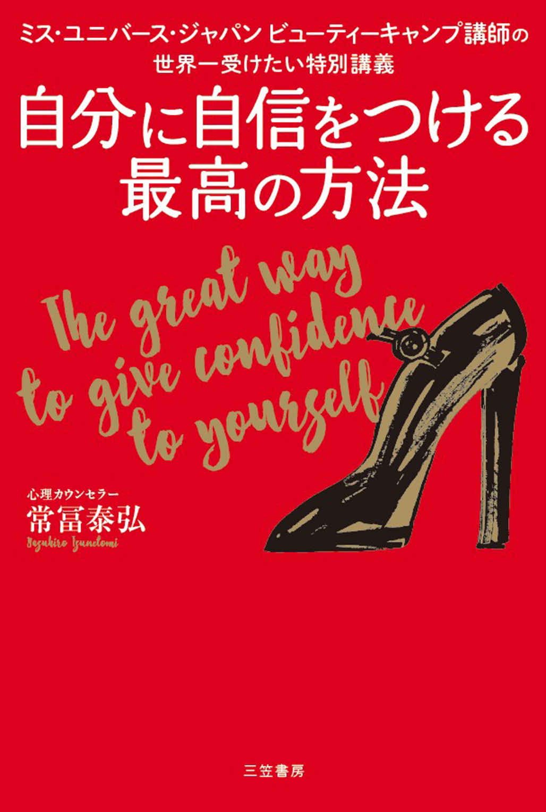
三笠書房
自分に自信をつける最高の方法
常冨泰弘
この本は縦書きでレイアウトされています。
また、ご覧になる機種により、表示の差が認められることがあります。
はじめに
「理想の自分」に生まれ変わるための最高の方法
「もっと自分に自信をもてたら......」
「私もあの人のように、どうどうと振る舞えたら......」
「もっと度胸があって、緊張せずに話せたらどんなにラクだろう......」
本書を手に取ったあなたは、こんなふうに悩み、悔やんできたのではありませんか？ インターネットや書籍、セミナーなどで見つけた、さまざまな自信をつける方法を試してみたけれど、どれもあまり変化がなかった、あるいは、効果が持続しなかったのではないでしょうか。
自信とは、小手先のノウハウだけで身につくものではありません。
それが真実です。
心理カウンセラーである私のワークはどれも変わっていて、あなたの想像するものとは異なるかもしれません。ですが、言葉でいいきかせるだけでは得られない、 本物の自信を身につけるためのとっておきの方法 ばかりです。
本気で変わりたいと願うなら、恥ずかしくても、「本当にこんな方法で効くの？」と疑わしく感じても、とにかく本書に書いてあるとおりに実践してみてください。
実践すれば必ず効果が出ることは、日本を代表する女性を決める美の祭典、ミス・ユニバース・ジャパンの出場者たちによって実証ずみです。
プレッシャーや不安に押しつぶされ、「私なんかが日本代表になれるのかな......」とガチガチに緊張してうまく歩くこともできず、自己紹介では頭の中が真っ白になってだまりこんでしまっていたような彼女たちが、私のたった１時間ほどのレッスンを受けたあとに劇的な変貌を遂げるのです。
彼女たちが、 あがりや緊張を克服 して、世界中の人々の視線が注がれるステージで、どうどうと自分の美をアピールし、なめらかな口調で感動的なスピーチをする姿を何度も目にしてきました。
輝いている人には、理由がある
人は自信がつくと、話し方のほか、姿勢、ファッションなどの見た目、そして人間関係や人生にチャレンジする意欲といった内面まで、すべてが輝きをまとい、変わってくるのです。
２０１４年のミス・ユニバース・ジャパンに選ばれた辻恵子さんと、２０１５年のミス・ユニバース・ジャパンに選ばれた宮本エリアナさんは、私が担当した長崎大会から選出されています。その宮本エリアナさんは、こういってくれました。
「私は自分のことを表現するのがあまり好きではなく、抑えこんでしまっていました。でも、常冨先生に出会って考え方が変わりました。もっともっと、自分を表現していきます！」
ステージの上で巨大なプレッシャーと闘うミス・ユニバース・ジャパンの出場者たち。 彼女たちと、毎日の生活の中で他人の視線を気にしているあなたは、同じひとりの女性です。
彼女たちは、私のほんの１時間のレッスンで自分を変え、そして生まれ変わりました。未来を変えました。じっくりと時間をかけて取り組むことのできるあなたが、変われないはずがありません。
世界が称賛する
「美しい生き方」のための知恵を贈ります
本書では、ミス・ユニバース・ジャパンのファイナリストたちに教えたことだけではなく、さらに効果の高い自己改善のメソッドも紹介しています。
それらはどれも、「背が低いのでオシャレができない」「太っているから男性に縁がない」「小さいころから、母親にかわいいといってもらえなかった」などの、 個々人の特性や、家庭環境に深く根ざした劣等感を、根こそぎ大そうじしていくメソッド です。小手先でごまかすようなものではありません。
ありのままの自分を、丸ごと肯定できるようになる、最強にして最高の方法です。どんな人にもきっと効果があります。
「自信という最強の武器」を得たあなたに、この先どれほど素敵な人生が拓けていくのか？ 説明するまでもないでしょう。あなたが夢見る人生、やりたいこと、楽しいこと、うれしいことがどんどん実現していきます。どれだけ時代が変わろうと、どんな環境にあろうとも、自分の思うとおりに、自分の足でしっかりと歩みを進めていけるようになります。
ワークを体験した
ファイナリストたちの絶賛の声、続々！
自然と涙があふれ出てきて癒やされました。美しい講義をありがとうございます!!
（２０１６年 富山代表 中沢あゆみさん）
涙が止まりませんでした。先生の暗示とイメージの力の大きさに驚きました。
（２０１６年 茨城代表 熊谷恵理子さん）
子どものころからあまり親にほめられることなく育ってきたのですが、小さなころに戻ってセルフイメージを修復することができると知ることができたのは私の一生の財産です。いろいろなことにおいて、もっと向上する可能性が見出せました！ ありがとうございます。
（２０１６年 山口代表 隈部沙耶香さん）
私は自分のことを表現するのがあまり好きではなく、抑えこんでしまっていましたが、常冨先生に出会って考え方が変わりました。もっともっと自分を表現していきます。
（２０１５年 長崎代表、日本代表、世界大会６位タイ 宮本エリアナさん）
人前に出て話すだけでも緊張していた彼女たちが、自信を高めて世界に通用する人に成長していく姿を見るにつけ、思うようになったことがあります。
私のレッスンを受けられる一部のかぎられた人たちだけでなく、もっともっと多くの女性に本当の自分の魅力を発揮してもらいたいと。そしてまた、自分にしか歩めないオリジナルな人生を、勇気をもって選んでいってほしいと。
そう、本書は、あなたの中にまだ秘められている魅力、能力、行動力を存分に発揮できるようにする一助になりたいと願い執筆したものです。
さあ、本書を左手に、希望を右手に、「理想の自分」に生まれ変わる一歩を踏み出しましょう！
常冨 泰弘
ＣＯＮＴＥＮＴＳ
女性は「自信」で９割変わる
――いつも魅力的な人は、「自信のパワー」を味方にしてきた
■ 嫌われても動じない。「心の構え」しだいで挫折さえも力に変わる
ミス・ユニバース・ジャパンの特別な10 日間
――心も磨き上げる「ビューティーキャンプ」メニューを公開
■ 地方大会のビューティーキャンプ──初めてドレスを着る人も！
■ 日本大会のビューティーキャンプ──挨拶の段階からすごい！
■ 最初から自信満々な人はいない。あるのはこの「積み重ね」だけ
■ 何かひとつ打ちこめるものを見つけると、人生のすべてが輝き出す
世界一受けたい〝自分に自信をつける授業〟
――９割の人が涙した、心を癒やす教室へようこそ
■ 「どうして」を「どうすれば」に変えれば必ずハッピーエンドになる！
■ ワークの効果について─子どもの表情はあなたの心の景色そのもの
Ｃｈａｐｔｅｒ４
すぐに折れない心をつくる新しいワーク
――短時間で絶大な効果のセルフイメージを高める法
「自分には価値がある」と確信するために
■ 輝いている人だけがもっている「心のメジャー」
■ ワーク１ 人生の最終目標を掲げる......無限の可能性をインプット
■ セルフイメージが勝敗を決める
「自分の魅力」に気づくために
■ 明日必ず幸せになるために、絶対に必要な条件
■ コンプレックスから解放されればあなたの魅力は爆発する！ ほとばしる！
■ ワーク2 自分をほめてもらう......輝く魅力をインプット
■ 「鏡」と「写真」があれば自分ひとりでも魅力を咲かせることはできる
「自分の意志」を尊重するために
■ 「自分はこうしたい！」──他人を気にせず行動できる人の特徴は、ここに表れる
■ ワーク3 好きなように踊る......自由をインプット
■ ゆったり優雅に動く─スピードひとつでこんなにいい変化が起こる
■ 才能やオリジナリティを存分に発揮する、たったひとつの条件
■ ワーク4 大好きなことをする...... オリジナリティを発揮するチャンスをつくる
「自分の存在価値」を高めるために
■ 「誰かの役に立つこと」の素晴らしい効果
■ ワーク５ 誰かのためになることを願いながら仕事をする
Ｃｈａｐｔｅｒ５
一生、折れない自信が続く！ アフターケア
――修復した 〝心の土台〟 を守るための注意点
aftercare 1 心から笑う
■ 「何もしない」には限界がある。庭も心も、マメな手入れが必要
■ 笑っているとき〝心の土台〟は安定している ──「いい笑い」は人生の可能性をさらに広げる
■ 「おもねる笑い」はＮＧ
■ 感情はお天気のようなもの
■ ネガティブな感情を消すワーク
aftercare 2 感謝を示す
■ 「ありがとう」が素直にいえないようでは自信はつかない
■ 素直に感謝できるようになるワーク
aftercare 3 つらい記憶はさっさと忘れる
■ もったいない！ いつまでも昔の「思い出」に苦しめられていませんか？
■ いやな出来事を忘れられる記憶の書き換えワーク
aftercare 4 たっぷりスキンシップをする
■ 「私は愛されている」という安心感を育てるヒント
■ 幼児期のスキンシップが情緒安定のカギ。でも大人になっても間に合います！
■ 孤独感を癒やすワーク
aftercare 5 ストレスから遠ざかる、解消する
■ 日常のストレスも〝心の土台〟をもろくする
■ 発散は思いきり過激に！ 「我を忘れてはしゃぐ」のがポイント
■ 日常のストレスを解消するワーク
aftercare 6 不安をなくす
■ 不安で行動できない人、不安でも行動できる人
■ その心配事は、確実に起こることですか？
■ 「不安のメガネ」を外し、「安心のメガネ」をかける
■ あれこれ考えるより、３回呼吸を整える
■ 日常の「なんとなく不安」を解消するワーク
Ｃｈａｐｔｅｒ６
〝暮らしの質〟を高めて、心を満たす
――上質な日々がセルフイメージをアップし、大きな喜びをつれてくる
上質な言葉をふだん使いにする
■ 〝心の土台〟を強化したら、質のよさにこだわってセルフイメージを高める番
■ セルフイメージの高い人と会話する
■ ほめられても謙遜しない、卑下しない
■ 「反面教師」にするのでなく、丸ごと受け入れる
いらない情報はどんどん捨てる
■ ビューティーキャンプでセルフイメージがガラリと激変する秘密
■ ゴシップガールにならない
つき合う人を選ぶ
■ つき合う人があなたをつくる
■ 自分よりセルフイメージの高い人と一緒にすごす
■ たとえば、誰に相談するかで未来は変わる
オートマティック（機械的）な反応をやめる
■ 朝起きてから、夜眠る前まで「何も考えていない人」
■ 今の自分を見つめ直して「考えてから行動する人」へ
苦手なことにトライする
■ できない自分から、できる自分に変わりたい！
■ スタバに行くのが怖い!? ─初めてのことが難しい理由
「あがり・緊張」をなくす
■ なぜ、大勢の人の前だと緊張するのか？
■ 「失敗が怖い！」このプログラムを書き換えると緊張しなくなる
自分の意見を主張する
■ 嫌われない努力より、自分を大切にする勇気を育てよう
■ 「伝える練習」をすることも大切
コンプレックスを捨て去る
■ 「顔は小さくなければダメ？」偏った思いこみこそが欠点だった
■ 欠点を愛して愛して、魅力に変える
小さなことを気にしない
■ 悩んでいるときは視野が狭くなっていることに気づこう
■ 「高いところから」「ロングに」俯瞰するといい！
理想の人生を思い描く
■ 最後にとっておきのワークをプレゼント
■ 理想が現実に変わるビジュアライゼーション
■ 今日からいつもの日常が、特別に変わる！
おわりに 気づいたら「気にしなくなっていた」
編集協力 串田真洋／保住早紀
ＤＴＰ ケイズプロダクション
本書の効果的な使い方
まず、Ｃｈａｐｔｅｒ３の「子どものころの自分を癒やすワーク」と、Ｃｈａｐｔｅｒ４の「自分をほめてもらう......輝く魅力をインプット」を２週間、毎日続けてください。
その間に、Ｃｈａｐｔｅｒ４のそのほかのワークも並行して行ないます。
この２週間で、傷ついた心が癒やされ、劇的に人生が輝き始めます。
３週目以降は、築いた自信をキープするために、Ｃｈａｐｔｅｒ５のアフターケアを行ないます。さらにセルフイメージを改善し、未来をよりダイナミックに変えていきたいという意欲のある方は、Ｃｈａｐｔｅｒ６のコツを実践してください。「やることがたくさんあって大変そう」と思われるかもしれませんが、どれも10 分前後でできますし、やってみれば気持ちのいいことばかりです。
「ちょっとやってみよう」と一歩、踏み出せば、のどから手が出るほど望んでいた自信があなたのものになるのです！ 実践しない手はありません。
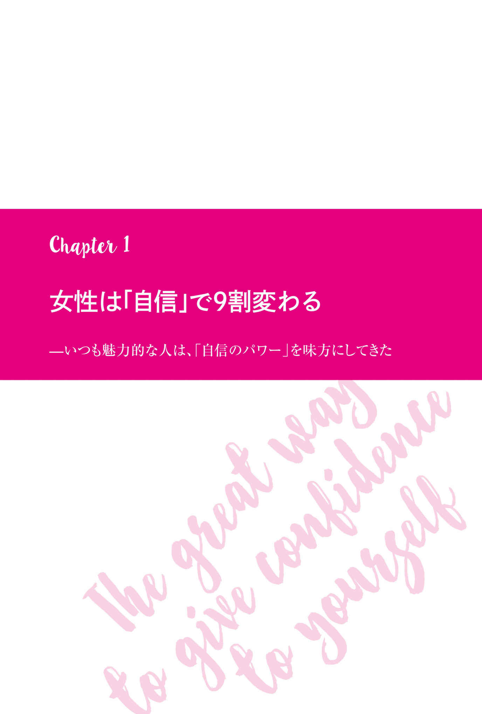
美女たちをささえた「自信」の正体
心理カウンセラーの私が
「美の祭典」ミス・ユニバース・ジャパンに必要とされる理由
女性の一生は、「自信」で大きく変わります。
自信は、心の在り方や容姿、ファッションなど、生き方のすべてに大きな影響を与えるからです。
心理カウンセラーである私は、２０１４年から毎年、ミス・ユニバース・ジャパン日本大会の「ビューティーキャンプ」でメンタル面の講義を担当し、 セルフイメージを高めて未来を切り拓いていく方法を教えています。２０１５年、２０１６年には長崎大会のビューティーキャンプでも講師を務めました。
ミス・ユニバース・ジャパンとは、一般社団法人ミス・ユニバース・ジャパンが主催する、日本一の女性を決定する美の祭典です。各都道府県で参加者を募って地方大会を開催し、都道府県ごとの代表を決定します。各都道府県大会の優勝者となった47 人が、ファイナリストとして日本大会に進出します。
この日本大会で１位に輝いた「ミス・ユニバース・ジャパン」は、世界大会である「ミス・ユニバース」のファイナル（世界一の美女を決める世界大会）へ、日本代表として出場することになります。
私が講師を務める 「ビューティーキャンプ」 とは、地方大会、日本大会の前に出場者を集めて行なわれる、美を磨き上げるための「集中合宿」のことです。
美しさを競い合うミス・ユニバースと、心の問題を扱う心理カウンセリングとの間には、一見、なんの関係もないように思えるかもしれません。しかし、じつは、「美しさ」と「心の状態」、そして「人生の幸福」との間には、密接な関係があるのです。 内面（心のもち方）を磨く心理的アプローチこそ、美しさをさらに際立たせるために、大きな役割を果たすからです。 この講義でセルフイメージを高められるかどうかが、ミス・ユニバース・ジャパンに選ばれるか否か、その結果を左右するといっても過言ではないでしょう。
自由でしなやかで、前向きになれる！
──自信は何より美しいあなたの財産
「どうしたら、もっと自分を美しくすることができるだろう」
そんなポジティブなチャレンジ精神を携えている人は、新しいメイク法やファッションを試し、 最大限に自分の魅力を引き出す ことが自然にできます。
「私はこんな人物です！」と、ありのままの自分を恥じることなく、オープンにできる自信があると、その内面は外面に影響を与え、 スーッと伸びた美しい姿勢が保てる のです。
「私は、こういう貢献をしていきたい！ 困っている人たちにこんな援助をして助けたい」と、心に確固たる夢や強い希望があるから、 自分の考えをどうどうとスピーチし、アピール することができます。
自分に自信があるからこそ、「素敵だなぁ！」と憧れる人にもものおじせず声をかけ、会話することができます。 新しい出会いや、チャンスをどんどんつかんでいくことができます。 たとえ、面接やオーディションで１００回断られ続けたとしても、 １０１回目のチャンスをつかみ取って、必ず花を咲かせます。
「失敗した」「これは自分には向いていない」とわかったら、 サッとしなやかに新たな方向を目指す こともできます。
逆に、すぐに心が折れてくじけてしまう後ろ向きな性格であれば、
「こんな私が、あんなイケメンとつき合えるわけないよね」
「あんな素敵な服を着てみたいけど、私のスタイルじゃ無理だわ」
「もっと背が高ければモデルを目指したのに......」
と、やってみたい気持ちはあるのに、最初からあきらめてしまって行動しません。
「このままでは人生の貴重な時間を不本意なまま費やしてしまう......」
そんなもやもやした気持ちを一掃し、人生というステージで輝きたいという思いを抱いている今こそ、自分を変えるときです。そのために最初にやるべきことが、内面を磨いて自信をつけることなのです。
なぜその服を着るの？
なぜそれを食べるの？
ミス・ユニバース・ジャパンに出場しようと思うくらいの人なら、最初から度胸も自信もあるのでは？ と思うかもしれません。もちろん、すでにモデルやタレントとして活動し、ある程度自信をもって参加してくる人もいますが、多くは普通に学校へ通う学生さんや、会社勤めの一般の人たちです。
さらにいうなら、たとえモデル業などの経験があったとしても、ビューティーキャンプで自己紹介やスピーチをすると声が上ずってしまい、ひと言も話せない人、顔が引きつってまったく笑えない人はいます。
なんでも完璧にできる人ばかりではありません。でもそんな人たちも、私の講義を受け、ビューティーキャンプで自分を磨いていくうちに、大舞台で満面の笑顔をふりまいて歩けるほどの自信を身につけていきます。
自信に満ちあふれた人は、なぜ、輝いているのでしょうか？
それは、自信というものが、人間性を表すあらゆる要素に影響するからです。
行動面（話し方、姿勢、立ち居振る舞い、仕事のパフォーマンス）、自己表現（ファッション、メイク）、人間関係（恋愛、つき合う友人）、生活の質（描く夢、目標、収入の額、食べ物）にいたるまで......本当にありとあらゆるところに影響が現れます。
たとえば、「自分には、品質のよいものを受け取るだけの価値がある」と思っている人は、美や健康を保つ、体によい食事を当たり前のようにとることができます。そしてまた、自分を引き立たせる美しい衣装で着飾ることも躊 躇 しません。抵抗なく、自分のために十分なお金をかけることができるのです。人から素晴らしい贈り物をされたときも、素直に感謝して受け取ることができます。
ところが自信のない人は、自分の健康のために品質のよい食材を買うことにさえ、「私なんかには贅沢だ、もったいない」と思ったり、さらには罪悪感を抱いたりします。ファッションやメイクにしても、「そんなに明るい色は、私には似合わない」「みんなに笑われそう......」「そんなに派手なデザインの服は、着られない」などと勝手に決めつけてしまいます。本当は似合うものさえ、自ら遠ざけてしまうのです。
人に話しかけられることが
増えていくヒント
このように、心の内面は、外見や行動、生活の質にも影響するのです。
心が自信で満ちていることで得られる一番のメリットは、悩みや不安が入りこむ余地が少なくなり、笑顔があふれ、心からの楽しみが増えることです。
心に不安や緊張がなければ首や肩の筋肉もゆるむので、自然とハリのあるのびやかないい声が出ます。そして、ハキハキとした大きな声で話せるようになります。
また、自分に欠点やコンプレックスがあっても、決して卑屈になることなく、ありのままの自分でいることができます。見栄や虚勢を張らずに、自分の欠点も、長所もすんなり受け入れられるのです。
無用の緊張や気負いのない、素の状態でいるときこそ、その人本来の魅力がもっともよく発揮されます。 そういう人は、リラックスした大らかな雰囲気があり、周囲の人に安心感を与えます。まわりはその安心できる雰囲気に、吸い寄せられるような魅力を感じ、寄ってくるのです。
そう、 自信をもてば、あらゆることが「これでＯＫ！」となるのです。 自信のある人は、何か足りないと自覚する部分があれば、努力をして手に入れよう！ と前向きに行動できるので、人生で手にするものも多くなります。どんどん魅力が増していきます。
つまり、自信をもつことは、魅力的な人になる最短、最高の方法だということ。自分に自信をもてば内側から輝く笑顔が手に入り、さらに魅力的な人になることができるのです。
「クラスの人気者の魅力」
「女優やアイドルの魅力」
たんに容姿がいいだけでは、ミス・ユニバースのコンテストで勝ち残り、世界で活躍することはできません。
たとえば、学校や会社でかわいい、きれいといわれる人が、いきなりミス・ユニバースの大舞台に立ったとしても、勝ち残ることはまず無理です。ステージに立って自分をアピールすることに慣れている女優やモデルといった芸能関係者ですら、難しいでしょう。
なぜなら、求められる美しさの基準と、美しさを磨き上げる方法が、まるっきり異なるからです。
クラスや会社で容姿がよいとされる人は、かぎられた環境の中で似たような価値観をもつ人たちにだけ評価されれば通用する美。 人種や文化、言葉が異なり、価値観もさまざまな世界中の人すべてに受け入れられる必要のあるものではありません。
また、女優やアイドルなど芸能人の魅力は、多くの人に親しまれる美しさです。極端ないい方をすれば、本人と周囲の人々の努力によって高められた、商品価値としての美しさが必要なのです。女優の場合は、撮影現場では、カメラマン、照明係、メイクアップアーティスト、スタイリスト、演出家など大勢が味方となって、彼女たちの美しさや個性を引き立てようと全力で協力してくれます。
当の女優も、映画やドラマ、ポスター、コマーシャルなど、ある目的をもったひとつのコンテンツを制作するために、指示に従い、「素材」として機能することに徹するものです。つまり、われわれが芸能人を見て感じる魅力や美しさは、「裏方の力が結集してつくられたもの」ともいえるのです。
ミス・ユニバースが求める
「世界に通用する魅力」
これに対し、ミス・ユニバースで求められるのは、「自立した個人の美しさ」です。知性や誠実さ、人間性などの内面も重視されます。そして多様な国や文化圏の人たちに深い感銘を与えようとする社会性、グローバルな世界で通用する、自立した美しさが評価されます。
それには、顔立ちやスタイルなど、外見的な美しさのほか、会話における知性や感性あふれる受け答え、自信の有無などの内面の強さ、社会貢献への意欲なども必要です。つまり、 人間として「美しい」と形容される特質のすべてが審査の対象となる のです。
ミス・ユニバースのファイナリストたちは、そうした要素を、自分の努力で身につけ、血肉となるまで自分自身を磨き、美しさを身にまとわせていくのです。
ビューティーキャンプでは、ウォーキングやメイク法、表情のつくり方など、ファイナリストに必要ないろいろな要素を、超一流のプロフェッショナルたちに教わりますが、 教わったことを理解し、吸収するためには自分の努力が必要です。
その姿は、学校に通って一生懸命に勉強することや、会社で一生懸命に仕事を覚えようとするのと同じです。どんなに教師や上司の教え方がうまかったとしても、教わる本人が努力して、覚えよう、身につけようとしなければ、成長は望めません。
そして文字どおり、自分を磨き上げたファイナリストたちは、ステージという現場で「自立した個人の美しさ」を競い合います。
そこでは、同じステージに立っている人すべてがライバルです。
自分だけを応援し、贔屓 してくれる味方は、そばにはいません。しかも客席にいるのは、自分目当てのファンではなく、出場者の美しさを厳しく比較、吟味する審査員と観客です。ステージに立った彼女たちは、たったひとりでそうした人たちと対 峙 し、栄冠を勝ち取らなければなりません。
猛烈なプレッシャーに襲われることは、想像に難 くないですよね。
そんなステージの上で唯一、彼女たちのよりどころとなるのが、「自信」なのです。
たったひとりで世界中の視線を受けとめて戦うミス・ユニバースのファイナリストたちのように、ゆるぎない自信を身につけたなら、あなたの魅力は極限まで高まるでしょう。
「自信がもてない」ことは、
珍しいことではない
「あなたは自分に自信がありますか？」
「いいたいことを、きちんといえていますか？」
「着たい服を着ていますか？」
「嫌われることを恐れずに、断る勇気がありますか？」
「自分の人生に希望がもてると思いますか？」
すべてに「はい」と大きな声で答えられる人は、どのくらいいるでしょうか？
「私なんて、まだまだ......」と思っていないでしょうか？
私の心理カウンセリングを受けにいらっしゃる方の多くは、「恋愛や職場の人間関係がうまくいかない」「不安や心配が先立って行動できない」「人前で緊張する」といった悩みを抱えています。
そんな人たちに、さらにくわしい状況を尋ねていくと、これらの悩みのほとんどは、自信のなさから生じているということがわかったのです。
「私なんて......」と思うから、好きな人にアプローチすることをためらったり、自分の意見をいうことに不安を覚えたりするのです。夢を心にしまったまま、もう何年も現状に足踏みしている人もいるでしょう。
現状を変え、夢をかなえたい気持ちは強いのに、尻ごみして何もできないと悩み続けることは、とてもつらいものです。こうした人たちの、自分を信じて一歩踏み出したい、という思いは本当に切実なものだと思います。
自信がない人は、せっかくチャンスにめぐり合ったのに尻ごみしてチャレンジできなかったこと、素敵な人から食事に誘われたのに「私なんかつり合わない」と思って断ってしまったこと......などなど、 いつまでも「過去」を悔やんで、「今、現在」を無駄にしているのです。
そして「未来」においても、メディアや人にすすめられるままに大きな夢や目標を描いてはみるけれど、「私にそんな大それたことができるわけない」「本当にできるのかしら......」と思ってしまいます。チャンスに手を伸ばさないと後悔するとわかっているのに、自信がないから手を伸ばせない。そしてまたどんどん後悔が積み重なって、さらに自信を失っていく......。
そんな悪循環に陥っている人もいるでしょう。
自信があれば、過去を気にせず、現在も未来もあっというまに好転させることができる、新しい自分に生まれ変わることができる と、みんな頭では、わかってはいるのです。
だから、のどから手が出るほど自信を求めている、それなのに、どうすれば手に入るのかがわからない......。
多くの人は、ここで壁にぶつかり、自信を手に入れられずに困っているわけです。
ゆるぎない自信は、自分でつくれる
「本当に自信のある状態」とは
さて、「自信」とはいったいなんなのでしょう。
人は、どんなときに「自信がない」というのでしょうか。
「自信がないから、人前で話をすることなんてできない」
「自信がないから、自分ひとりで大きな決断をすることはできない」
「自信がないから、オシャレができない」
「自信がないから、好きな人に声をかけられない」
このように自信のない人は、自分を尊重できず、自分には価値がないと思っています。そのため、自分の判断、行動、表現を尊重できないから、意見をいったり自分で決断をくだしたりすることができないのです。
「ありのままの自分には価値がない」と思ってしまうから、何かをしたいと思っても一歩を踏み出せず、冒険的なオシャレや恋愛からも逃げてしまうのです。
「このままの自分はダメだ」という感覚ももっています。それゆえ、自分は周囲の人より劣っていると思いこんでがんばりすぎてしまったり、ダメな自分を悟られまいと、いい人を演じたりしてしまいます。
一方、自信がある人は、自分の判断、行動、表現を尊重できます。自分には何かをする価値があると思えるので、したいと思ったことを素直に実行することができます。
「そのままの自分で大丈夫」という感覚をもっているので、必要以上にがんばることも、自分を隠すこともせず、ありのままの自分でラクに生きられるのです。
自信は「自分を信じる」と書きます。
自分の何を信じるかというと、すべてです。自分のすべてを大丈夫だと信じられることです。
自分の存在や、考え、気持ち、行動といったものを、そのまま「それでいいのだ」と思えることです。
この「自分は大丈夫だ、これでいいのだ」という思いに、根拠は不要です。
よく〝根拠のない自信〟といいますが、「〇〇を経験したから自信がある」「〇〇の資格をもっているから自信がある」という〝根拠のある自信〟は、Ｃｈａｐｔｅｒ２の図 の上部の積み上げられた「経験」や「能力」による自信です。これは、土台が崩れれば、一緒にガラガラと崩れてしまう自信だともいえます。
一方、〝根拠のない自信〟は、経験を積み重ねるための下地、〝心の土台〟の部分に当たります。なぜそう思うのか自分でもわからないけれど、「自分は大丈夫」「やればできる」「失敗してもなんとかなる」という確信をもっています。
この感覚が、本当の自信がある状態です。
そういう人に、「どうしてそう思えるの？」と聞いても、「わからない。ただ、やれるとしか思えないの」という答えが返ってくるでしょう。
本当の意味で自信がある人は、「自信がほしい」と思うこともありませんが、特に 「自分に自信がある」とも思っていません。「自分には自信がある」と思うことは、じつは自信がないことの裏返しなのです。
こうした「自分はなんとなく大丈夫だ、ＯＫだ」と思える感覚、自己肯定感が、本当の自信の正体です。
嫌われても動じない。
「心の構え」しだいで挫折さえも力に変わる
自信がいかに大切なのか、おわかりいただけたでしょうか。
しかし、ミス・ユニバース・ジャパンに出場するほどの女性たちであれば、あえて意識して自信をもつ必要はないように思う人もいるでしょう。すでに素晴らしい容姿とスタイルを備え、きらびやかなドレスを着こなしているのですから、多少自信がなくても問題はないように思えます。 ところがやはり自信は重要なのです。自信の有無は、アピール力とも密接に関係しているからです。
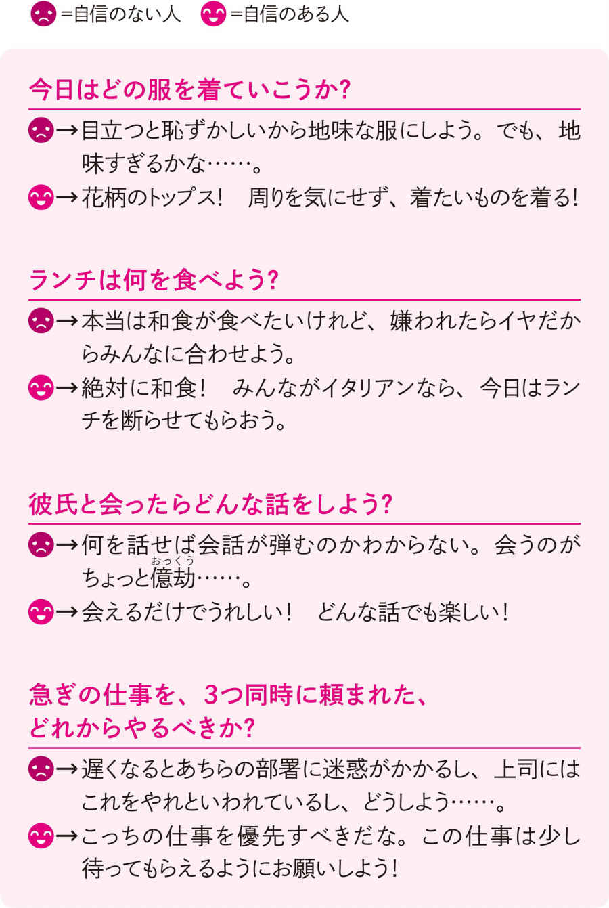
ミス・ユニバース・ジャパンのステージに立つファイナリストたちは、審査員たちと観衆の厳しい視線を容赦なく受けながら、懸命に美しさをアピールしなくてはなりません。彼女たちは、日常生活ではまず身につけないであろう派手なドレスに身を包み、遠くの席にいる観客にも表情でアピールできるように、輪郭をくっきりと強調する濃いメイクでステージに立ちます。
全観客の視線を一身に浴びながら、大きくポーズを取り、大きな声でスピーチし、はち切れんばかりの笑顔をふりまかなければなりません。
ミス・ユニバース・ジャパンを勝ち抜いて日本代表となり、世界大会であるミス・ユニバースへ進出したなら、要求されるレベルはさらに高くなります。異国の地で、文化も言葉も、美の価値観すらも異なる人々を魅了しなくてはならないからです。そんなステージ上で誰もが息をのむような輝きを放ち、もてる魅力のすべてを発揮するには、どんなプレッシャーの中でもくじけない心の強さが必要です。
「どんなドレスが、もっとも自分を引き立たせるのか？」
「自分の自立心をアピールするしぐさは何か？ 前の人とスピーチやポーズがかぶったらどう変えるか？」
本番直前まで自分を美しく表現するためにさまざまな決断をくだし、本番のステージの上に立つわずかな間にも、重要な判断がいくつも求められます。そしてその決断は、勝ち負けに直結します。
もしも「決勝に残れなかった＝この中で一番美しいわけではない」という非常に残酷な結果を衆目の前でくだされたとしても、たったひとりでそれを受けとめなければなりません。
これだけすさまじいプレッシャーがのしかかれば、自信のない人は、最後まで笑顔で立っていることすらできません。泣きくずれてしまうことすらあるでしょう。それまでの努力が水泡に帰するむなしさ、敗北感や嫉妬、くやしさ、怒りといったネガティブな感情に支配され、とても笑顔を維持していられないのです。
そして、真の自信をもつ、心の強い女性のみが、残酷な結果を受け入れ、それでもなお「自分はよくやった。負けたけれど、私が美しいことには変わりはない」と納得し、凜 と立っていることができるのです。そしてやがてその経験を力に変え、新たなステージへ飛躍していきます。
日常生活でも同じです。自分自身や自分の行動に自信をもつことができれば、傷つくことや、否定されることへの恐怖心が減っていきます。
何かで失敗したとしても、「私がやってきたことには価値がある」と、精いっぱい努力してきた自分を誇ることができるようになります。
むやみに取り乱したりせずに、ゆったりとした気持ちで人生を送れるのです。
２０１４年ミス・ユニーバース・ジャパン愛知代表で、２０１５年、２０１６年はミス・ユニバース・ジャパンの事務局のお仕事もされていた山口真季さんは、こういってくれました。
「自信があるとウォーキングのときの表現力が変わります。ただ歩いているのと確信をもって歩いているのは違うんですよ。
きれいに歩く技術をもっていることは基礎、そこができたうえで自分をどう出していくかという部分は、たぶんメンタル的な部分だと思います。
トップファイブや代表に選ばれる人たちは、ウォーキングの技術、舞台でのパフォーマンスにほとんど差がありません。そのうえで、存在感や目がくぎづけになる魅力は、精神的なもの、自信、セルフイメージの高さからくると思います。その意味で、常冨先生の講義は私自身とても役に立ちましたし、これからもすべてのファイナリストに受けてほしいと思いました」
この努力は裏切らない！
女性は外見を磨くと、確実に自信を高められる
女性が自信を獲得するために必要な要素のひとつに、「美しくなること」が挙げられます。女性にとって「美しい自分であるかどうか」という問題は、人生や性格を一変させるほどの大きな影響力をもっています。
美しくなるためには、バランスの取れた食事や睡眠をしっかりとり、適度な運動をするなどの方法があります。ファッションやメイクを研究して外見のオシャレを磨くこと、表情に気を配ることも、欠かせないポイントです。
それらに加えて、考え方、心のもち方といった精神的な要素も、内面からにじみ出る雰囲気を保つことに大きく影響します。
考え方、心のもち方については、これから本書で磨いていくとして、まずは外見でブラッシュアップできることがあれば、どんどん試していきましょう。
ファッション、メイク、ダイエット、デトックス、ヘアスタイルのイメージチェンジ、ネイルアート、エステサロン、マッサージ、ヨガ、ウォーキング、フィットネス......などなど、自分をさらに美しく見せるために変えられることは、いろいろあるはずです。
すでにかなりの研究をしていたとしても、マンネリ化していないか、流行遅れになっていないか見直してみましょう。
もしかしたら、ずいぶん前に、「私に赤は似合わない」「私がこんなに高価な化粧品を使っても意味がない」などと、勝手に自分のイメージを決めつけてしまい、ずっと同じような色やデザインの化粧品や服装ばかりを選んでしまっているかもしれません。時代や年齢が変われば、似合う色もファッションも変わってきます。
オシャレに年齢制限はなく、生きているかぎり楽しみ続けていいものです。何歳になっても、かわいらしく、きれいになっていいのです。
美しくなりたいという自然な気持ちを、「もう年だから」と、抑えこんだりあきらめたりする必要はありません。
内側からにじみ出る輝きには
「セルフイメージ」が関係する
セルフイメージとは、「自分が自分に対して抱くイメージ」のことです。
人は誰でも「自分は○○な性格だ」「自分は○○が苦手だ」など、自分はこんなキャラクターだというイメージや思いこみを、もっているものです。
「私は美しい」という高いセルフイメージをもつ人もいれば、「私はブスだ」という低いセルフイメージをもつ人もいます。
あなたのセルフイメージはどうでしょう？ 次の５つの項目のうち、自分に当てはまる項目があるかチェックしてみてください。
今あるセルフイメージをチェック
１ 何かを決めるときになかなか決められない。決断が遅い。「いやです（ＮＯ）」といえない。
２ 何かをするときに「ちゃんとしなければ」と思う。
失敗するのが怖く、人から自分がどう評価されているかに敏感。
３ 人前で話すのが苦手。初めて会う人に話しかけることができない。本番で実力を発揮できない。
４ 目立つのがいやで、発言しなかったり、声が小さくなったりする。地味な服を着る。自分の要求をいえない。
５ 自分が好きではない。自分は欠点が多いと思う。自分には価値がないと思う。
これらの項目はどれも、自信のなさ、セルフイメージの低さがよく表れる部分です。ひとつでも当てはまると感じたなら、セルフイメージが低い、つまり、自分自身にネガティブな思いこみをもっている状態にあるといえます。
そして当然ながら、「私はブスだ」などというネガティブなセルフイメージが、人生によい影響を与えるはずがありません。
たとえば失恋したり、容姿をほめられなかったり、心が傷つく出来事が起きたとしても、いいセルフイメージをもっていれば大丈夫なのです。「彼は人を見る目がないだけ。もっと見る目のある素敵な人を見つけよう！」と前向きに考えることができ、心の傷も、しばらくすれば癒えていきます。
しかし、セルフイメージの低い人は、「やっぱり私はブスだから、ダメなんだ。オシャレをしても無駄なんだ」と自分で自分をさらに傷つけてしまい、ますます自信喪失してしまいます。
「私はブスだから、お化粧なんてしても無駄」
「私はブスだから、オシャレしても無駄」
「私はブスだから、人に好かれない。愛 嬌 なんかふりまいても無駄」
悪いセルフイメージが自分の中に巣くってしまうと、こんなふうに日常のさまざまな出来事を悪くとらえるようになります。
その結果、「仕事で怒られてばかり」「友だちと会うのが憂うつ」と、毎日いやなことばかりだと感じるようになってしまうのです。そんな人を「美しい」「魅力的だ」と感じてくれる人はいないでしょう。
自分がブスであると思いこんでしまい、自分にも他人にも気を配らなくなるのは、女性としての楽しみを自ら放棄しているようなものです。
セルフイメージを変えれば人生も変わるが、
簡単ではない！
これまで見てきたように、自分自身に対するイメージは、あなたの自信の有無にとても密接に関係しています。
セルフイメージを改善できれば、あなたの性格や考え方、行動は一気に変化し、たちまち自信に満ちあふれた人生を送れるようになるでしょう。
しかし、この世に生を受けてから現在まで、何十年もの時間をかけて、少しずつ形成されてきた性格や考え方は、それほど簡単に変わるものではありません。
「自分に対するイメージを変えれば、人生も一変する」という真実を知っただけで、実際にセルフイメージを高めることができれば、誰も苦労はしないのです。
言葉だけでどうこうしても、自信は生まれません。自信を得るための暗示やアファメーション、瞑想のたぐいをいろいろ試してみて変化があったとしても、長続きしない場合があります。
セルフイメージを根本から変化させ、一生をどっしりとささえてくれるほどの確固たる自信を得るには、どうしても「行動」が必要なのです。
セルフイメージをアップさせるために私は、まず、 〝幼少期のセルフイメージ〟を改善する ところから始めます。
セルフイメージは、年齢を重ね、さまざまな経験をするたびに上書きされ、新しいセルフイメージが形づくられていきますが、その根幹には必ず、物心がつくよりも前の幼いころ、具体的には0 歳から５、６歳くらいまでにつくられた〝幼少期のセルフイメージ〟というものが存在します。
まだ、言葉を話せず、社会のルールを何も知らない時期に、母親や育ててくれる人のあたたかい腕に抱きしめられ、ミルクを与えられ、泣けばすぐにオムツを替えてもらえるといった経験をするうちに、 「私はこの世界に存在していい」「私は愛されている」「私は重要な存在だ」 といった漠然とした安心感を覚えていきます。これが〝幼少期のセルフイメージ〟というものです。
この〝幼少期のセルフイメージ〟がネガティブなものだと、その後の人生でいくら成功体験を積んでも思うように自信を得られず、毎日を楽しくすごすことが困難になってしまいます。ですから私のワークでは、最初にここを改善するのです。
その具体的方法はＣｈａｐｔｅｒ３でご紹介しますが、一番根深いところにある〝幼少期のセルフイメージ〟を改善して初めて、自信を手に入れるためのほかのワークの効果も上がるのです。
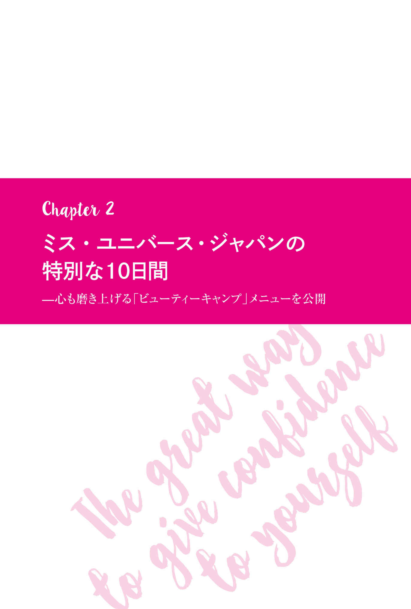
ファイナリストたちは
「ビューティーキャンプ」で自分を磨く
全員参加！
言葉づかいから品性までピカピカに
ミス・ユニバース・ジャパンの「ビューティーキャンプ」とは、いったいどんなものなのでしょうか？
ミス・ユニバース・ジャパンには、各都道府県の代表者を決める「地方大会」と、地方大会を勝ち抜いたファイナリストたちの中から日本代表を決定する「日本大会」のふたつの大会があります。このふたつの大会は「ファイナル」と呼ばれ、ファイナルに出場する女性たちを「ファイナリスト」と呼びます。
日本代表は、毎年、世界80 カ国以上の代表たちが参加するミス・ユニバース世界大会に出場し、世界の美女たちと美しさを競います。
そして、それぞれの大会前に出場者たちを集め、美を磨き上げるために行なわれる合宿を、「ビューティーキャンプ」といいます。
その合宿で講義を担当する講師たちは、講師であると同時に審査員でもあります。講義を通じて、ステージの上だけでは推し量れないふだんの生活態度や、心構え、志といった内面的なことを審査するためです。
レッスンに取り組む姿勢はもちろん、講師の話を聞く態度、レッスン中の立ち居振る舞い、言葉づかい、品性まで、じつに細やかにチェックしていきます。
このビューティーキャンプ中に講師たちがファイナリストたちにくだす評価は、本番であるファイナルで基礎点として加点されます。
地方大会のビューティーキャンプ
──初めてドレスを着る人も！
各都道府県で開催される地方大会は、自選、他選を問わずに書類審査が行なわれ、予選でさらに絞りこまれ、残った女性たちがビューティーキャンプへと参加することになります。
地方大会のビューティーキャンプは、各都道府県にあるミス・ユニバース事務局が独自の裁量で行なうため、キャンプ内容や期間は、一律ではなく、ばらつきがあります。
私が講師として参加している長崎大会のビューティーキャンプは、毎年10 月から実施されます。毎週土曜日から日曜日にかけて、ホテルに泊まりこみで行なわれます。週に２日間、それが５週続くので、合計10 日間です。
ファイナリストの中には、部活動に明け暮れていた高校生や大学生もいますから、お化粧をしたことがほとんどないとか、今までドレスを着る機会がまったくなかったという人も珍しくありません。
そんな素朴な女性たちが、ビューティーキャンプが終了するころには、外見も内面もまるで別人のように美しく変貌を遂げるのです。
じつは、２０１４年のミス・ユニバース・ジャパンに選ばれた辻恵子さんも、２０１５年のミス・ユニバース・ジャパンに選ばれた宮本エリアナさんも、長崎大会から選出されました。
長崎大会のビューティーキャンプは、地方大会の中では比較的期間が長く、内容も充実しています。ウォーキングやボディワーク、メイクといった外見を磨き上げることが主要なレッスンでは、業界の第一線で活躍する講師が専属でついています。
このような充実したビューティーキャンプがあったからこそ、ふたりともしっかりと自信をつけることができ、長崎大会から２年連続でミス・ユニバース・ジャパンを輩出することができたのだと思います。
もちろん、地方大会を勝ち抜いて日本大会で優勝を狙うためには、ビューティーキャンプがない平日のすごし方も大切です。平日のすごし方はフィジカル（体）とメンタル（心）のコンディションを大きく左右し、それが大会の結果に影響するからです。
ファイナリストたちはキャンプで学んだことを心にとめて生活するほか、仕事や学校の合間をぬって、ウォーキングやボディワークなどの個人レッスンに励んだり、大会のステージで自分をもっとも輝かせるドレスを選んだりしているのです。
日本大会のビューティーキャンプ
──挨拶の段階からすごい！
各都道府県の代表に選ばれた47 名は、日本大会のファイナリストとなります。そして12 日間連続で、都内のホテルに泊まりこみで日本大会に向けたビューティーキャンプに参加します。
日本大会のファイナリストたちは世界に通用するレベルの美を身につけるため、歴代のミス・ユニバース・ジャパンたちや、美容、ボディワーク、ダイエット、メンタルなど各分野の超一流の専門家らの指導による、厳しいトレーニングを集中的に受け、日本大会に臨むのです。
各講義のスタイルは、それぞれの担当講師に一任されています。
ピラティスやウォーキングといったボディワーク系のトレーニングは、トレーニングウェアを着て、大きなホールで行なわれます。
私の講義を含め、講師の話が中心となる場合、ファイナリストたちは学校の授業のように椅子に座って講義を受けます。
ただ学校と違うのは、全員が華やかなドレスを着て、ハイヒールを履 き、各都道府県名の入ったタスキをかけているところです。さすがに、本番用のメイクは大変な時間と手間がかかるためしませんが、本番さながらの装いと緊張感をもって講義を受けます。 講義の段階からすでに、座り方、挨拶の仕方など、あらゆる所作に日本代表としての品格が求められているのです。
色鮮やかなドレスを着て、背筋をピンと伸ばして着席する47 名のファイナリストたちを壇上から見渡すと、彼女たちは真っ直ぐ視線を返してきます。そして講義が始まると一斉に「よろしくお願いします」と挨拶し、一礼します。
この一連の所作が、なんとも美しいのです！ こうして、ミス・ユニバース・ジャパンのビューティーキャンプはスタートします。
「外見を磨くメニュー」
「内面を磨くメニュー」
ミス・ユニバース・ジャパン日本大会のビューティーキャンプでは、おもに次のようなトレーニングが行なわれます。
▼外見を磨くトレーニングメニュー
・ボディバランス、姿勢
・ウォーキング
・表情
・健康、食・栄養
・メイク、ヘアスタイル
・体力ＵＰ
......ｅｔｃ．
▼内面的を磨くトレーニングメニュー
・スピーチに求められる、知性、社会貢献度、コミュニケーション能力、話し方
・ダンスやウォーキングのときに求められるパフォーマンス力
・自信
・目標達成、モチベーション
・感性、人間性
......ｅｔｃ．
もちろん、私が担当しているのは「自信」のトレーニングです。
このほか、「日本文化を学ぶ」「郷土のよさを知る」などの講義もあり、ビューティーキャンプで行なわれるすべての講義を合計すると、42 科目にものぼります。
ファイナリストたちは約２週間にわたり、午前９時から午後６時すぎまで、１日中びっしりとトレーニングを受けるのです。
自信を自家生産できる人、
その心の仕組み
最初から自信満々な人はいない。
あるのはこの「積み重ね」だけ
ここから先は、私が実際にビューティーキャンプで行なっている講義の内容について明かしていきます。
実際のビューティーキャンプでは時間にかぎりがあるため、必要最低限のことしか教えることができません。しかし本書では、キャンプではお話ししきれない 「心と体と自信の関係」をわかりやすく解説していきます。
夢をかなえたり仕事にやりがいを感じたり、オシャレや人との出会いを楽しんだり......。自分が望む人生を送るために、自信は欠かせません。そしてまた長い人生、ときには挫折し、心が折れることもあるでしょう。そんなとき、ここでお話しする「自信が生まれる仕組み」を知っておけば、自信の回復に必ず役立ちます。
自信喪失から立ち直りまでのスピードがアップし、何度つまずこうとも最終的には必ず目指すゴールにたどり着く力となります。また、本書で紹介するさまざまなワークも、より一層、効果が上がりやすくなるでしょう。
生まれた瞬間から自信満々の人なんて、ひとりもいません。誰もが時間をかけてたくさんの「経験」を積み重ねるうちに、そして、「能力」アップの努力をするうちに、自信は少しずつ積み上げられ、形づくられていきます。
とりわけ、「何かをやり遂げた」という成功体験は、大きな自信となります。 たとえば、週に３回ジョギングをしようと決意した人が、それを１年間続けることができて、大きな充実感や達成感を味わえたなら、それは、 「私は粘り強く、ものごとをやり続けることができる」という自信になります。
やり始める前は「自分にできるかな？」「三日坊主で終わりそう」「飽きてしまったらシューズやウェアが無駄になる......」と心配していたけれど、いざやってみたら「意外と簡単だった」「自分にもできる」「楽しかった」「ほかのこともできそうだ」という前向きな考えに変わっていきます。
この考え方の変化こそ、自信がつくられるプロセスのひとつ、「成功体験の積み重ね」です。
学生時代に剣道部に所属していたある女性は、朝練や放課後のハードな練習に加え、土日は試合や大会があり、剣道一色に染まった生活をしていたそうです。
就職してからは、剣道をすることはなくなったそうです。しかし、仕事や家庭でつらいことがあっても、あの厳しい練習に励んでいた時代を思い出すと、大抵のことは乗り越えられるといいます。
「あのとき、あんなにがんばれたのだから、これくらいなんでもない！」と思えるそうです。
つらくてもサボったり辞めたりせずに、鍛錬を積み重ねたという成功体験が、誰に対してもものおじしない自信と、折れない心をつくっているのです。
何かひとつ打ちこめるものを見つけると、
人生のすべてが輝き出す
剣道をやっていた彼女の事例のように、過去、何かに打ちこんだ経験がないという人でも、今から打ちこめるものをもてば、まったく問題ありません。
「打ちこんだものが何もない」と嘆く時間があったら、趣味でも今手がけている仕事でもなんでもいいので、目についたものから全力を注ぐことです。あるいは、「いつかやってみたい」と思いながら、ずっと一歩を踏み出せずにいたことを、この機会に始めてみましょう。
やってみて、それが自分に合っていなかったなら、またほかに自分に合いそうなことを探せばいいだけです。いくつか試していくうちに、自分に合うもの、合わないものがわかってきます。好きなこと、やりたいと思えることなら、上手下手といった技術的なことや、なかなか上達しないといった能力の問題は関係ありません。
そうやって、本当に一生をかけて打ちこめるものを見つけていけばいいのです。
「私はこれに心底打ちこんでいる」といえるものができたとき、心に一本、どっしりとした太くて大きな芯がとおります。
すると周囲は、そんなあなたを見るにつけ、「落ち着きがあって輝いている人だ」と感じるようになります。趣味や仕事に真剣に打ちこんでいると、成果も上がってくるものです。自然とほめられることが増え、趣味や仕事以外の日常生活にも好影響が出てきます。すると、日々ハッピー感を覚えるので、さらにあなたはキラキラと輝いていきます。これがとても大きな自信となります。
こうしたどっしりとした成功体験がひとつでもあると、まだ達成したことのない未知の問題に対しても「きっと克服できる」と立ち向かう力になります。
また、成功したことで得られる達成感を心地よく感じれば、「もっと大きな達成感を味わいたい」という意欲も湧いてきます。
成功体験を積めば積むほど、前進する活力を得ることになり、その活力を使ってさらなる成功を遂げることで、また活力を得る......こんな好循環が生まれるのです。
「失敗」を失敗のままで
終わらせないヒント
では、失敗の経験はどうなのでしょうか？
失敗したら、自信はガラガラと崩れてしまうのでしょうか？
失敗が自信を失わせる原因となるのか、さらに自信を強くする糧 となるのかは、その人しだいです。
失敗したまま終わらせてしまえば、当然、自信は得られませんし、人として成長することもありません。「できることしかやらない」ことになるからです。
でも、失敗したそのときはダメージを負ったとしても、
「失敗の原因はわかった。そこを改善すればうまくいく」
「今の自分にはハードルが少し高かった。もっと勉強して再チャレンジしよう」
などと失敗から学び、自分の間違いを修正し、再び挑戦して成功を勝ち取ることができれば、人は成長し、自信を深めていくことができます。
何度も失敗したとしても、くじけずにチャレンジを続けて、「ついにできた！」となったときには、すんなり成功したときの何倍も大きな自信を手に入れることができるでしょう。
つまり、 大きな失敗さえも、その後の行動しだいで、大きな自信を得るための糧にすることができるのです。 「人生に無駄な経験はない」とよくいわれますが、まさしくそのとおりなのです。
「自信」を
見える化するとこうなる
「自信がある」とはどういう状態なのか、視覚化してみましょう。
すでに解説したとおり、 自信とは、「自分ならできる」「自分は正しい（大丈夫だ！）」「失敗してもなんとかなる」と信じられる力 です。具体的に何ができるのかは重要ではありません。とにかく「自分ならなんとかできる！」という信念が大切です。
この信念は基本的に、「経験の積み重ね」から生まれますが、この経験の積み重なった状態を視覚化すると、次の図 のように表すことができます。
心の中に、これまであなたが考えてきたことや行動のすべてが、経験として積み上がっていくのです。うまくいった成功体験はそのまま自信の源となり、失敗の経験は成功を生み出すための経験則となります。
では、成功も失敗も、すべての経験が心の中に積み重なって自信となるはずなのに、なぜ、強い自信をもつ人と、まったく自信がない人の差が生まれるのでしょうか？
自信が「経験の積み重ね」だけで成り立っているのであれば、年齢が高い人のほうが自信に満ちていることになりますが、実際は違います。同じ年齢でも自信の強さは人それぞれです。ミス・ユニバース・ジャパンでは、17 歳から26 歳までの女性がエントリーできるのですが、何度もファイナリストに選ばれている20 代の女性よりも、初めて参加する高校生のほうが落ちついていることがあります。
世の中には、何かすごいことを成し遂げてきたとか、特別な成功体験を積んできたというわけではないのに、自信に満ちあふれている人はいます。
反対に、非の打ちどころがないほど容姿端 麗 な人、仕事ができる人、他人よりも秀でた能力をもっている人が、「私なんか、まだまだ」「私よりすごい人はたくさんいる」などと、度がすぎる謙 遜 をし、極端に卑 下 することがあります。
なぜ、このように自信の有無に差ができてしまうのでしょうか？
じつは、自信がない人と自信に満ちあふれている人の差は、成功体験の回数や経験の多さや、吸収した知識の差だけで決まるわけではありません。
経験を自信として「積み上げられるか」「積み上げられないか」の違いもあるのです。自信をもてない人は、それまでの人生で得た経験を、自分の中できちんと積み上げることができていないのです。
〝心の土台〟とは
〝幼少期のセルフイメージ〟のこと
では、なぜ経験を自信として積み上げることができない人がいるのでしょう？
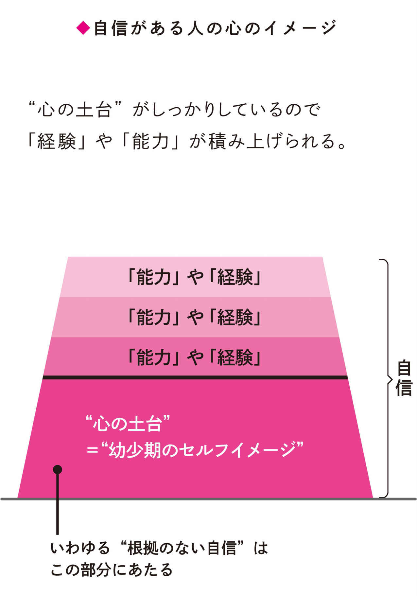
それは、〝心の土台〟が弱いからです。〝心の土台〟が弱く不安定だと、いくら経験をしても積み上げていくことができないからです。
〝心の土台〟とは、０歳から５、６歳のころまでにつくられた〝幼少期のセルフイメージ〟のこと。それは、あなたの心の根幹をなす部分です。
〝心の土台〟が不安定な人は、失敗や敗北を真正面から受けとめることが苦手です。自分の非を認め、反省し、改善することから逃げ出してしまいがちです。そして失敗や敗北を他人や環境のせいにして心の安定を図ろうとしてしまうのです。
これでは次の成功につながるプラスの経験に昇華させることができないばかりか、もともと不安定だった〝心の土台〟をさらに不安定にしてしまうこともあります。
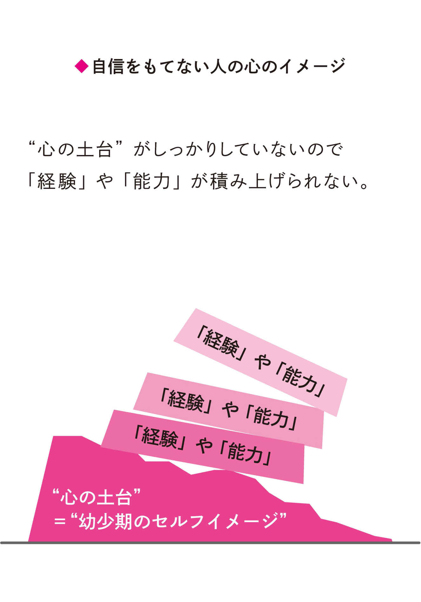
ミス・ユニバース・ジャパンのビューティーキャンプでは、私の講義を、初日か２日目の、なるべく早い段階に組みこんでもらうようにしています。
その理由は〝心の土台〟をしっかりしたものにしてからウォーキングやスピーチなどのトレーニングを受けるほうが、効率よく、それらのレッスンで得た経験を積み上げることができるからです。
内面的な美しさと、外面的な美しさ、どちらも獲得するには強く安定した〝心の土台〟が必要です。
そのため、傾いた〝心の土台〟を修復し、強固にし、人生のあらゆる経験を自信として積み上げていくためのコーチングを、私が行なっているというわけです。
次のＣｈａｐｔｅｒ３では、〝心の土台〟＝〝幼少期のセルフイメージ〟がどのように形成されているのかを明らかにしていきます。
〝心の土台〟が形成される仕組みを知り、あなたが現在抱いているセルフイメージの状態を知ることこそ、自信に満ちあふれた自分に生まれ変わる第一歩となります。
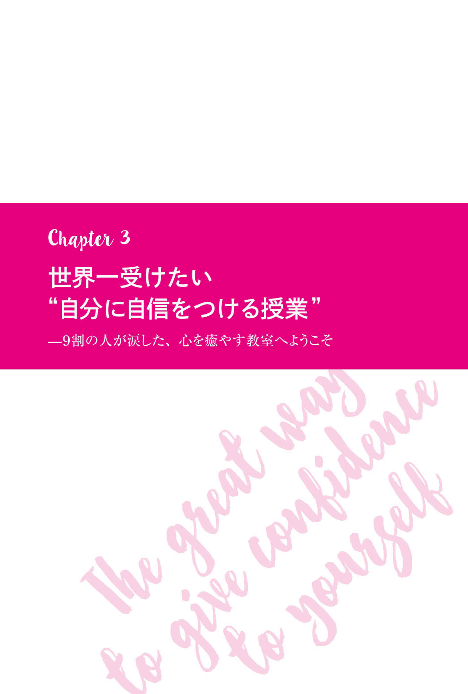
たった１時間で、
なぜ彼女たちは、生まれ変わったのか？
真剣に取り組めば、結果に天地の差がつく
ミス・ユニバース・ジャパンのファイナリストたちに対して、私がどのような講義をし、どんなワークに取り組んでもらっているのか。それを紹介することは、自信を必要としているすべての人にとって、大いに参考になるでしょう。
ただし、私がビューティーキャンプで実施している講義やワークの内容は、皆さんが抱くイメージとはまったく違っていると思います。
「こんな変な方法で本当に美しくなれるの？」とか、「これが自信となんの関係があるのだろう？」と疑問に思う人もいるでしょう。確かに少し変わっているので、そう思うのも無理はありません。 ですが、私がお教えするワークを本気で実践してくだされば、必ず変わることができます。
ミス・ユニバース・ジャパンの参加者たちの多くは、人前に出る機会のほとんどない一般人です。それが、 わずか１時間、自分の心の内側に触れることで、コンプレックスを克服する方法を自分で発見し、日本を代表する女性を目指すほどの強さと前向きな気持ちを獲得している のが何よりの証拠です。内面から生まれ変わり、自信に満ちたピカピカの心と体で本番のファイナルに出場していくのです。
さて、ここまでのところで、自信を獲得するためには、最初に〝心の土台〟を強くすることが必要であること、そして、この土台がしっかりしていないと、せっかく人生で得た経験や知識も自信として積み上がっていかないことを解説しました。
また、 〝心の土台〟とは、〝幼少期のセルフイメージ〟である とも述べました。
次に、〝幼少期のセルフイメージ〟がどのように形成されていくのかを、くわしく見ていきましょう。
〝心の土台〟はこうしてつくられる
子どもの脳は、３歳くらいまでに大人とほぼ同じくらいの大きさになり、中学生くらいまでに完成するといわれています。
まず、０歳から３歳ころまでは、視覚、聴覚、嗅覚など、五感をフル稼働させて外界からの情報を、判断の基準として取りこんでいきます。遊びや食事、親とのかかわりなどを通してこの時期に吸収した情報は、それ以降の人生における「基本情報」となり、〝心の土台〟の強度に直結します。
次に、５、６歳になるころには、両親のほか、祖父母、幼稚園の先生、近所の人といった養育者たちとのコミュニケーションをもとに、自分と他人との関係性をはっきりと理解するようになります。それと同時に、自分に対するなんらかのイメージをほぼ確立します。「自分は美しい」「自分は頭がいい」「自分は愛される」という鮮明なセルフイメージができあがるのです。
この〝幼いころの「自分は○○○だ」というイメージ〟は、そのまま〝心の土台〟となり、その後の人生に大きな影響を与え続けることになります。
ではなぜ、〝幼少期のセルフイメージ〟が〝心の土台〟として定着し、大人になっても影響するほどの力をもつのでしょうか？
たとえば、両親から「お前はなんでもできる」と繰り返しいい聞かせられた子どもは、「そうか、私はなんでもできる子なんだ」というセルフイメージをもちます。
物心ついたばかりの子どもは、「なぜ自分はなんでもできるのか？」などと疑問をもつことはありません。親の言葉が「正しいのか」「間違いなのか」「本音なのか」「冗談なのか」などを推察・検証する判断力がないからです。
両親から伝えられた「お前はなんでもできる」という情報について、真偽のほどはおかまいなしに、漠然と「自分は、なんでもできるんだ」と思いこみます。
両親と会話をするうちに自然と言葉を覚えていくのと同様に、「自分はなんでもできる」というメッセージも、当たり前の情報としてインプットされるのです。
これが〝幼少期のセルフイメージ〟です。このようにしてその後の人生で得ることになる経験や知識を積み重ねていく〝心の土台〟ができあがります。
〝心の強さ〟が
人生に大きな影響を与える
何も知らない幼い子どもは、最初から大人のようになんでもできるわけがありません。ごく簡単なことができなかったとしても、ほとんどの場合は、きちんと教わる機会がなかったからだとか、ただ知らなかっただけというのが真相です。
それなのに、親や周囲の人々の一方的な価値観から「おまえはダメな子だ」という、事実とは違う歪んだメッセージが送られ続ければ、それはそのまま、子どものセルフイメージとなります。
「私はダメな子だ」という否定的な評価が、心の奥の無意識の部分に横たわってしまうのです。
そしてこの歪んだ〝幼少期のセルフイメージ〟は、そのまま〝心の土台〟の歪みとなります。 〝心の土台〟がいびつに歪んでいれば、せっかくの成功体験も知識もうまく積み上がらず、自信になりません。
しかしほとんどの人は、こうして〝幼少期につくられた心の土台〟が、その後の人生に大きな影響を与えていることに気づいていません。だからがむしゃらに勉強したり働いたり、あらゆる努力をすることによって劣等感をぬぐい去り、自信をつけようとするのです。ですが、大抵は空回りしておわってしまいます。
ここで理解してほしいのは、親や周りの大人だって完璧な人間ではないということです。疲れてイライラしていたら、子どもに心ない言葉をぶつけてしまうこともあるでしょう。そして確実にいえることは、今さらその過去を責めても、なんの解決にもならないということです。
自分自身に対して「価値がある」とポジティブな認識をもっている子どもは、その後の人生においても、自分の経験や知識を非常にポジティブにとらえていきます。
「箸 を使って上手にご飯を食べることができた」
「自転車に乗れるようになった」
「掛け算の九九を暗唱できるようになった」
こうした小さな成功体験を、自信として〝心の土台〟の上に積み上げていきます。大人になっても、自分の可能性をあきらめることなく、どんどん夢や希望を実現していくことができるのです。
「どうして」を「どうすれば」に変えれば
必ずハッピーエンドになる！
親や教師から「どうしてあなたは、こんなこともできないの!? 」と責められ続けた子どもは、心の中で何度も「自分はどうしてこんなこともできないんだろう？」とできない理由を探してしまうものです。そして、自分のダメなところを心に印象づけてしまいます。そういう思考のくせがついてしまうのです。
すると、成長してからも、難しい課題が与えられたり、困難な状況に陥ったり、ちょっと手間が必要な場面に遭遇したりするとすぐに「できない理由」を探し、最初からあきらめてしまうようになります。
何か困難な状況に直面したとき、無意識に「できない理由」「うまくいかない理由」を探してしまうことはありませんか？
「私、バカだから......」「着ていく服がないから......」「私の話はみんな引いてしまうから......」などともっともらしい理由を見つけて、できない自分を正当化していないでしょうか？
もしあなたが何かにつけ「できない理由」を探し、チャレンジをしない人生を送っていたとしたら、こんなにもったいない話はありません。素晴らしい未来につながるチャンスは、誰の人生にもめぐってきます。ほんの少しだけ勇気を振り絞って一歩踏み出してみる。それをするかしないかで人生が変わります。
できない理由を探している自分に気づいたら、「どうすればできるだろう？」という具合に、それを成し遂げる方法を自分に問いかけるようにしてみてください。
その問いかけはそのまま自分の潜在意識に対する命令となり、どうすればできるようになるのか、その方法を模索するようになります。必ず答えは見つかります。
子どものころの記憶から
わかること
「自分で決めようとすると、親に否定された」
「何かをうまくできたときしか、ほめてもらえなかった」
「『ちゃんとしなさい』と、よく叱られた」
こうした記憶が強く残っている人は、「自分には価値がない」というセルフイメージを幼少期にもってしまったかもしれません。
周囲の大人のネガティブな言葉や態度から〝心の土台〟が不安定になってしまった結果、その後の人生で得た経験や知識を自信として積み上げることができず、今も苦しんでいるのではないでしょうか。
セルフイメージは、心身の成長や環境の変化、新しい刺激が加わることによってどんどん変化していきます。現在のあなたのセルフイメージは、10 年前のセルフイメージと比べるとかなり変化しているはずです。
しかし、〝心の土台〟を形づくった〝幼少期のセルフイメージ〟だけは、大きく変化することがありません。
たとえ本人が忘れてしまったとしても、ほとんど形を変えることなく居座り続けます。そして年齢を重ねていくにつれ、自信のなさや、劣等感、コンプレックスとして表面化し、人生に悪影響を与えます。
〝幼少期のセルフイメージ〟つまり〝心の土台〟が、人生において非常に重要であることがわかりますね。同時に、子どもの自我の形成にもっとも大きな影響を与える親の在り方と、子どもに対する親の接し方が、いかに重要であるかがわかります。
〝幼少期のセルフイメージ〟を突き止めよう
──心の傷の深さはどのくらいか
〝心の土台〟を歪ませる最大の原因は、幼少期に自分自身の存在にネガティブな思いを抱くことです。 簡単にいえば、子どものころに心が傷つけられると歪むのです。
大人になってから、経験を積み上げられるようにするには、この幼少期の傷を修復することが大事です。
そのためにはまず、あなたの〝心の土台〟を歪ませた原因が何かを突き止めることから始めましょう。
ミス・ユニバース・ジャパンのビューティーキャンプで行なう私の講義も、この「歪みの原因」を探るワークからスタートします。
もし、幼少期に心が傷つくことなく、安定した〝心の土台〟を構築できているなら、Ｃｈａｐｔｅｒ４「すぐに折れない心をつくる新しいワーク」を実戦していただくだけで自信に満ちたあなたに生まれ変わることができるでしょう。
〝心の土台〟がしっかりしているのに自信がもてない人は、現在の自分を取り巻く環境と、その環境に対応するためにつくり上げた性格や考え方に原因があることがほとんどだからです。そんな人は自己啓発書を読んだり、セミナーに参加したりするだけでも、十分に自信を養うことができるでしょう。
しかし、どんな自己啓発本を読んでも、どんなセミナーに参加しても、自信に満ちた自分に生まれ変わることができなかったという人は、〝幼少期のセルフイメージ〟、つまり〝心の土台〟が歪んでいることが多いのです。
そういう人は、その歪みを改善していくために、〝生まれて初めて自分がイメージした自分自身〟と向き合うことから始めてみましょう。
「傷ついた子どもの心」を癒やさないと、
一生くよくよ悩み続ける
小さなころ、よくひとりで留守番をしていて寂しかった。
お母さんが忙しくて遊んでもらえなくて、悲しかった。
お父さんが、お酒を飲むと怒りっぽくなって怖かった。
下に弟や妹が生まれてから、お母さんにかまってもらえなくなった。
お父さんがとても厳しくて、ほめてもらったことがない。
両親がいつもけんかをしていて、家の雰囲気がピリピリしていた。
お母さんが何もかも決めて、自分の意見を聞いてもらえなかった。
こうした理由で負ってしまった子どもの心の傷は、痛みを取り除き、癒やしてあげないかぎり、決して消えることがありません。たとえ覚えていなくても、潜在意識の中にずっと残っているのです。
そして大人になってから似たような状況に直面すると、その古傷はズキズキと疼きます。すると、自分では理由がわからない不安や怒り、悲しみに襲われ、正しい判断ができなくなるのです。
「なぜか、誰もかまってくれないと不安になって自暴自棄になってしまう」とか、「なぜか大声でどなる男性がとても苦手」などというのは、こうしたことが原因になっていることもあります。
この、子どものころから現在までずっと放置され続けた心の傷を癒やすことが、〝心の土台〟を強くする、唯一にして、最高の方法なのです。
さあ、心の傷を修復しよう
ファイナリストたちも号泣
いよいよ、あなたの〝幼少期のセルフイメージ〟を突き止め、子どものころに受けた心の傷を癒やすワークを紹介します。
このワークに取り組むことで、ネガティブな〝幼少期のセルフイメージ〟が癒やされ、心の中にどっしりとした土台を再構築することができます。 そうすればＣｈａｐｔｅｒ４以降に紹介する「〝心の土台〟をさらに強くするワーク」や「現在のセルフイメージを改善するワーク」の効果が、より高まるでしょう。
ミス・ユニバース・ジャパンのファイナリストは全員、このワークに真剣に取り組むことで、号泣する人があとを絶ちません。
あるファイナリストはこう語ってくれました。
「先生の語りかける声が意識を深いところまでつれていってくれました。目を閉じて自分に語りかけているとき、気づいたら涙が流れていました」
彼女は、それまで見えていなかった心の傷に向き合うことができたそうです。
また別のファイナリストは、「あまり親にほめられることなく育ってきました。でも、セルフイメージを改善するワークで小さなころに戻ってやり直したら、もっともっと自分自身が向上する可能性を見出せました！ ありがとうございます」と喜んで報告してくれました。
彼女は本番のステージでも、とても魅力的に輝いていました。
子どものころの自分を癒やすワーク
① 落ち着ける静かな環境で椅子に座り、数回深呼吸し、リラックスします。
② 自分の目の前に、こちらを向いて立っている５、６歳の小さな子ども（自分の子どものころの姿）をイメージします。 子どものころの自分をリアルに思い出せなくても、なんとなくイメージすれば大丈夫です。できれば、何かいやなことがあったのか、寂しそうにしているところをイメージします。
③ その子の気持ちを察してあげます。 あなたの目の前に立っているその子は、何か話していますか？
この『自分に自信を付ける最高の方法』【無料お試し版】の完全版は、全国の書店およびオンライン書店にてお買い求めいただけます。
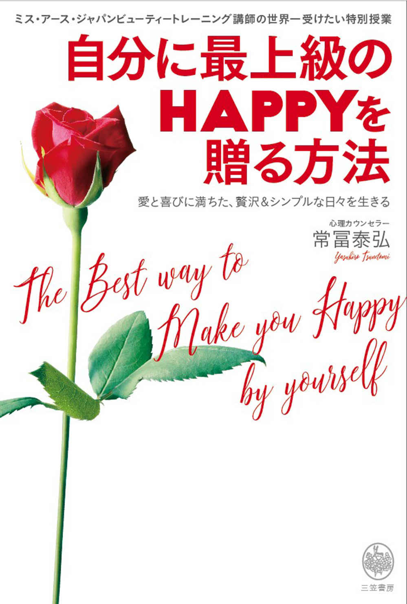
三笠書房
自分に最上級のＨＡＰＰＹを贈る方法
常冨泰弘
この本は縦書きでレイアウトされています。
また、ご覧になる機種により、表示の差が認められることがあります。
はじめに あなたが知っておいたほうがいい真実
──本当に幸せになってほしいから、明かします
「あなたは今、すごく幸せですか？」
こう聞かれたときに、あなたは即座に「はい、とっても幸せです」と答えることができるでしょうか？ それとも、こんなふうに思いますか？
「多少は幸せかもしれないけれど、〝すごく幸せ〟というほどではない......」
「もっとやせてキレイになったら幸せだけど......」
「いいえ、もっとお金がないと不安です......」
「あとは素敵なパートナーができて、自由に海外旅行ができたら幸せかな......」
「今、すごく幸せですか？」と問われて、即座に「はい、とっても幸せです」と思えなかったなら、私は、あなたに次のことをお伝えしなければなりません。
「今のあなたのままでは、望むものをすべて手に入れることは難しいでしょう。また、望むものすべてを手に入れられたとしても、心が幸福感で満たされることは、ありません」
ガッカリしないでください。あくまでも「今のあなたのままでは」の話です。
望むものをすべて手に入れる方法も、心を幸福感で満たす方法も、ちゃんとあるのです。それをお伝えするのが、本書です。
「あなたは今、すごく幸せですか？」と聞かれて、「はい、とっても幸せです」とすぐに答えられたら、どんなにすばらしいでしょう。
そう答えられるとき、あなたは本当の自分を生きていて、心の底から楽しくて笑顔でいられるのではないでしょうか。
楽しいことを素直に楽しみ、心配ごとや悩みごとに翻 弄 されることなく、自分らしく人生を満喫できる。そんな、 最上級のＨＡＰＰＹ──心の底から幸せに満ちたあなたに生まれ変わる最高の方法をお伝えするのが、本書なのです。
世界に誇れる
「ありのままの自分」が輝くレッスン
私は現在、心理カウンセラーとして個人カウンセリングを行ないながら、２０１４〜２０１８年までミスコンテストの世界四大大会のうちの１つ、ミス・ユニバース・ジャパンのビューティー・キャンプで講師をし、２０１８年からは、同じく世界四大大会の１つミス・アース・ジャパンでもメンタルコーチをしています。
なぜ美を競うコンテストで、心の問題を扱う心理カウンセラーがコーチをするのか？
こうしたミスコンテストでは、県大会や全国大会の前に、２週間ほどかけて、出場者たち本来の魅力をさらに磨きあげるビューティー・トレーニング合宿を行なっています。
そのトレーニングメニューには、「ウォーキング」「ボディーメンテナンス」といった外見を磨くもののほか、「スピーチ」や「文化について学ぶ」など、知性や心といった内面を磨くメニューがあります。その一環として、私の「メンタルを鍛えるトレーニング」があるのです。
私の担当している講義は、主に 〝セルフイメージのアップ〟 です。
日本語にすると、 〝自己重要感を高める〟講義 ということになります。
これは、ファイナリストと呼ばれる決勝進出者たちが緊張感が最高に高まる本番の大舞台に立ったときに、大勢の人に自分本来の魅力を１００％アピールできる、ゆるぎない自信をつけることを目的としたレッスンです。
自分に自信がなければ、世界各国から選ばれた審査員たちの厳しい視線が集まる中で、胸を張って姿勢よく立っていることすらできません。緊張で手足が震え、声が上ずって笑顔も引きつってしまいます。
ファイナリストたちに、決勝までの焦りや不安、緊張を克服する力を与え、心を整えるお手伝いをしていくことが私の役目です。
「心の底から変わりました！」
レッスン後のファイナリストたちの涙と感動の声
「このビューティー・トレーニング中、トレーニングの忙しさに追われてなかなか自分と向きあう時間がなく、自分を見失って苦しくなってしまうときがありました。でも先生の講義で、ありのままでいいんだなと初心に返ることができました！ 気持ちが軽くなり、心に余裕を持てました」
「ビューティー・トレーニングに参加しながら、周りの人に負けたくないがために外見を取りつくろうことに必死になっていました。でも、あの講義で心の底から変わりました。競争するんじゃなくて自分らしくいること、あの人に負けないようにじゃなくて、あの人の存在も認める、と考えられるようになりました」
「常冨先生のワークを体験して涙が出て、本当に心があったかくなりました。今まで悲観的なことばかり考えていたのが、いろいろなことを前向きに考えられるようになりました。自信を持つ感覚がわかり、迷いが消えました」
１冊目の私の本『自分に自信をつける最高の方法』では、このミスコンテスト前のビューティー・トレーニングのレッスン内容を主に紹介したところ、大勢の方からご好評をいただきました。自信を持ちたい方は、こちらもお読みください。
あなたの〝人生の幸福度を一気に上げる〟究極の知識
──幸せになるには、この賢さが必要です
一般向けに開催している「自信をつける講座」を受けた方が、次に進むステップとして、「セルフエスティーム講座」があります。
「セルフエスティーム」とは、「自己肯定感」のことです。
セルフエスティームが高いと、ありのままの自分を認め、長所も短所も含めて自分のことを丸ごと好きだと思えます。そして、自分を愛することができ、自分は今のままでＯＫであると思えます。
そんなセルフエスティームを高めることが、日々、幸せを感じて生きるための第一歩なのです。
セルフエスティーム講座では、自己肯定感を高めて、自分のさらなる価値に気づき、 「人生の幸福度を上げること」 を目的としています。
これを受講した方々は、日常生活でも仕事でも、以前にも増して積極的になり、自分のやりたいことをよりスムーズにできるようになっています。もっと自分らしく楽しく生きているようです。
本書はこの大好評の「セルフエスティーム講座」のエッセンスをまとめたものです。本書を読むだけでも十分な効果が得られるようにしています。
具体的にどんな変化が起こるのか、受講生たちの感想をご紹介しましょう。
・セルフエスティーム講座を受ける前と受けたあとでは、見える世界が変わりました。自分の今までの常識を超えることができました！
・すごい気づきがありました。実践的なので自分でも日々繰り返し使っています。
・ありのままの自分を信じられるようになりました。
・落ちこんでも、回復するスピードが前に比べて早くなりました。
・いろんな挑戦ができるようになりました！
・深く自分の中に入っていくと、思った以上に心に蓋をして抑えこんでいた感情があることに気づきました。私は私のままでいいと思えるようになりました！
・今この瞬間を心底楽しむことができるようになりました。
・とにかく楽しく弾ける時間が生まれ、毎日が輝いています。
誰もが、変わることができるのです。しかも、かなりの短期間で。
誰もが彼女のようにドラマチックに変われる。
覚悟を決めて７日間！
ビューティー・トレーニングでの私の講義時間は１〜２時間です。
たった１〜２時間で、本当に変われるの？ と疑問に思う方もいらっしゃると思いますので、ご報告しましょう。
講義を受けたファイナリストたちと、１年後、２年後にパーティーや何かのきっかけでお会いすると、 「あのとき常冨先生の講義を受けたことで、本当に緊張せずに、自分の１００％のパフォーマンスを発揮することができました。今でも人生のいろいろな場面で役に立っています」 と必ず感謝されます。
そして緊張しがちだったり、話し下手だったりした彼女たちが、〝人前に出る仕事〟に就いて活躍していると知らされると、本当にうれしくなります。
なぜたった１回の、しかもほんの１〜２時間の講義でこうも変わるのか？
それは、ビューティー・トレーニングを受けるファイナリストたちは、皆、本当に真剣だからです。
講師の話を少しも聞き漏 らすまいと集中して耳を傾けています。そして私が課したワークも、「本当に効くの？」と疑ったり、恥ずかしがったりせずに、素直な心で、体当たりで臨んでいます。
その真摯な心の姿勢が、最短で効果を出すことにつながるのです。
やるなら、ぜひ真剣に、そして素直にワークに取り組んでください。
どのワークもとても簡単で、シンプルです。
それでいて、試せば心地いいものばかりです。
今悩んでいる問題をどうすれば解決できるか？
どうすれば、繰り返してしまう悪いクセを直すことができるのか？
どうすれば、今よりもっと幸せになれるのか？ 一緒に考えていきましょう。
必ず、答えが見つかることをお約束します。
常冨泰弘
Contents
はじめに あなたが知っておいたほうがいい真実
──本当に幸せになってほしいから、明かします
「心の底から変わりました！」レッスン後のファイナリストたちの涙と感動の声
あなたの〝人生の幸福度を一気に上げる〟究極の知識──幸せになるには、この賢さが必要です
誰もが彼女のようにドラマチックに変われる。覚悟を決めて７日間！
幸せの感度を高める
幸せと上手につきあう方法
幸せな人はこの秘密を知って、さらに幸せになる
幸福のカードすべてがコンプリート ！ 本書のすばらしい効果の秘密
感情に素直になる
まずは心の仮面を脱ぎ捨て、
本当の自分を取り戻す
あなたがあなたらしく輝くために
４つの感情は、どれも大切なエネルギー。それぞれに、あなどれない価値がある
怒りは味方
人生がドラマチックに好転する
「最強エネルギー」の使い方
その「ムカッ」は、あなたを幸せにするためにやってきた！
他人に振り回されない潔さと、人生の主役にふさわしいオーラをまとう
〝道なきところに道をつくり、幸福スパイラルを巻き起こすパワー〟の封印を解く
男は「悲しみ」を抑えこみ、女は「怒り」を抑えこむ。そして笑えない結末に！
「それ」を感じるだけで、心は弾み出す！
心とは裏腹に？ あなたの中のタブーがひょっこり顔を出すとき
シャドウは、なぜその存在を激しくアピールしてくるのか
その日に感じた怒りはその日に解消。そして爽快な朝を！
Work3 怒りを解放するワーク
Chapter4
自己重要感を高める
「あなたには、すばらしい価値がある！」
人生で得るものすべてがランクアップする意識革命！
「私には価値がある」と思うことは、魔法を使えるようになるのと一緒
手と手をつないでいる瞬間さえ、それぞれの世界を生きている
胸ポケットに「幸せだけが見える色メガネ」をしのばせて
比べない。そこに、はかり知れない恩恵が！
いちいち気にしない人の秘密
幼いころの「思いこみ」が自動思考を決める
辛い記憶があっても、美しい花は咲かせられる
ファイナリストたちが号泣した自己重要感を高めるワーク
Work4 子どものころの自分を癒やすワーク
ワークの効果について
Chapter5
コインの裏と表を見る
自分の中の「光と影」。
心の奥底をのぞきこんで自分を知る
コンプレックスゼロの新しい私に生まれ変わる
ベールの下に見え隠れする影。ついに光を当てるときがきた
嫌いな人の嫌いなところは、自分の持っている認めたくない部分
タブーや絶対にしないこと。それもシャドウ
シャドウを爆発させると大ごとになる！
コインの裏と表を同時に見る、シンプルな方法
グレーの中にこそ、求めていた真理がある
シャドウをゼロにするために「１００％主義」をリセット
いいことをもたらす「幸福の使者 」を迎えよう
不幸のすばらしさに気づいた瞬間、「最上級のＨＡＰＰＹ」が次々舞いこむ！
世界は形を変え、勢いを変え、あなたの成長に合わせて進化する
Work5 コインの両面を見る力がつくワーク
Chapter6
視点を変え、意識を広げる
ちょっと宇宙まで、ＨＡＰＰＹバケーション！
もう迷わない。よりいい気分になる選択ができる！
宇宙空間へのトリップが、「新しい意識レベル」へ導いてくれる
才能を伸ばしたい人、今の自分にない強みがほしい人へ
Work6 偉人の資質を自分に取り入れるワーク
しっかり主張できる積極的性格になりたい人へ
Work7 新しい思考回路を開発するワーク
やりたいことを見つけたい人、人生で後悔したくない人へ
Work8 24 時間を最大活用できるようになるワーク
これだけは絶対に試してほしい！
「自分を客観的に見る力をつける」このうえなく大事なワーク
Work9 悩みが消え、人間の器が大きくなるワーク
☆高度１０００ｍまで離れた鳥の視点
☆４００㎞離れたスペースシャトルの視点
☆38 万㎞離れた月の視点
☆60 億㎞離れたボイジャー１号の視点
新鮮な感動を味わえる日々をあなたへ
Work10 平凡な一日を輝く一日にするワーク
驚きやときめきがほしい人、そろそろ地球に飽きてきた人へ
Work11 感動ととびきりのアイデアを得られるワーク
Chapter7
自分を愛で満たす
愛し、愛される喜びのために
「私は愛される価値がある」。この感覚を持つと扉が開く
両親のことが好きですか？ その答えからわかること
目の前に、とてつもなく大きな愛があることに気づいていますか
その大きな愛に気づく方法
ほっとできる安心感を自分に贈る、ファーストステップ
いい人間関係をつくり、愛を深めるために必要なもの
スキンシップは、愛情チャージ の特効薬
こんな人は、早めに愛情チャージを
また会いたいと思われる理想的な距離感のヒント
何が愛を〝鬱陶しさ〟に変えてしまうのか
今からでも、まにあいます。すごく簡単な〝自分を愛で満たすレッスン〟
Work12 愛情を補うワーク
愛する自信、愛される自信をよりいっそう育むために
Chapter8
子どもの心を取り戻す
シンプルに「今この瞬間」を
喜んで、楽しんで！
ビビッドカラーに輝く世界を！ ただ純粋に楽しむ練習
誰の中にも必ずある３つの心。あなたの中の「自由な子ども」救出大作戦！
これで「こうしたい」「これがいい！」が続々出てくる
心がコロコロ喜んで、魂が輝く感じが復活！
スキップしたくなるような！ 「今ここ」を１００％楽しむＨＡＰＰＹを自分に贈ろう
周りも驚く！ 世界もあなたの ♥ もビビッドカラーに変わる魔法
Work13 自由な子どもを解放するワーク
Chapter9
人生脚本を書き換える
「最高のハッピーエンド」を永遠に！
繰り返す失敗パターンを消去する唯一の方法
誰の人生劇にも「人生脚本」というものが存在する
魅力にもチャンスにも恵まれたマリリン・モンローに見る「人生脚本」の手強さ
彼女はこうして自分の「人生脚本」を書きあげた
心の底からＨＡＰＰＹを感じられる脚本を書くために知っておきたいこと
大人だって冒険しよう！ 「したいことをできる自分」を育てていく
人間の記憶はうまくできている。上書き修正が可能
Work14 人生脚本を書き換えるワーク
おわりに
写真 getty images
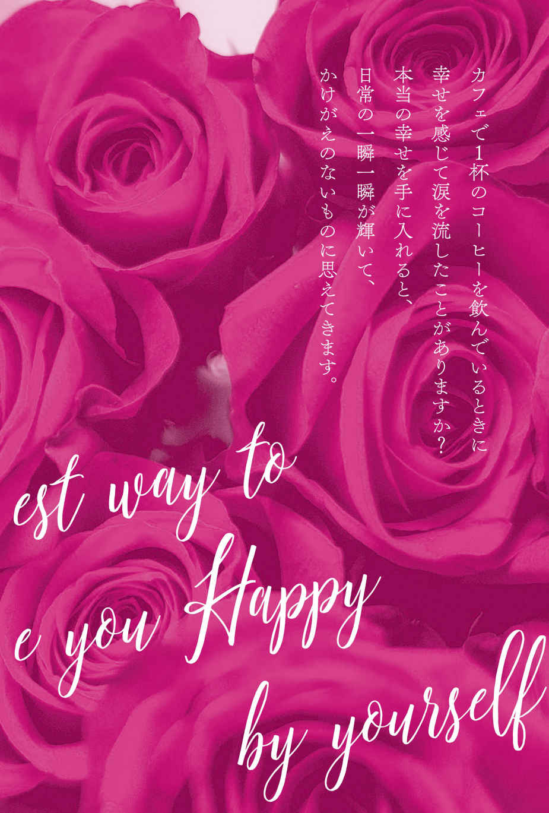
心満たされる
幸せな日々への第一歩
自分に「幸せになること」を許していますか？
あなたは、本当に幸せになりたいと思っていますか？
口では幸せになりたいと連呼していても、心の底では「私は幸せになってはいけない」と思っている方が、実は多くいるのです。
たとえば、幼いころからずっと苦労してきた親の姿を見てきた方などは、せっかくよい就職やよい結婚の話があっても、「自分だけ幸せになってしまっては、いけない」と、幸せになることにブレーキをかけてしまうことがあるのです。
あるいは、不幸でいるほうが得をすると思っていませんか？ その場合も、不幸から抜け出そうという行動を起こせません。
「不幸でいることが、どうして得することになるの？」と疑問に思いますか？ それは、不幸でいたほうが周りが優しくしてくれる。自分が今の不満足な状態に陥っている原因を自分のせいにしないで、辛い境遇や他人のせいにすることができる。
こんなふうに、不幸でいることに居心地のよさを覚えてしまうことがあるからです。
どちらのタイプも、まず〝自分に幸せになる許可〟を出すことから始める必要があります。 「求めなさい。そうすれば与えられるでしょう」 という新約聖書の言葉は、真実だったのです。
「自分は、幸せになってよい」と、キッパリ自分に許可しましょう。
人生に幸福をもたらす
３枚のカード
さて、本書の方法でなぜ幸せになることができるのか？ その理由をご理解いただくために、「人は、どういうときに幸せを感じるのか」について、簡単に説明しましょう。
人に幸せをもたらす要因は、大きく分けて３つあります。
①外的要因
②内的要因
③〝幸せの感度〟の高低による要因
それぞれの要因の特徴を簡単に説明しましょう。
①外的要因（外側からもたらされる幸せ）
「外的要因」による幸せとは、物質的、環境的要因によってもたらされる幸せです。毎日、食べるものや寝る場所に困らない。気の置けない友人がいて孤独ではない。十分な資産がある。広く快適な家に住んでいる。家族が皆、健康である。
ほかには、地位や名誉といった社会的立場や、家族、パートナー、友人の存在、趣味や娯楽なども含まれます。
これらは、一生懸命働いたり、お金をためたり、運動をして節制するといった現実的な努力をすれば、ある程度は得られます。しかし、自分の努力だけではどうにもならない面もあり、すべて自分の思い通り手に入れるのは難しいでしょう。
こうした、物質的、環境的要因を得ることを重視し過ぎると、１００％幸福な人生を手に入れるのは困難です。なぜならモノや環境といった物質的な豊かさを求める欲望には、際限がないからです。
また、「外的要因」によってもたらされる幸せは、家族や友人などの関係を除けば、さほど長くは続きません。飽きたり、すぐにまた新たなモノへの欲望が湧いたりするからです。人生という長い目で見れば、ほんの一瞬の幸せでしょう。
②内的要因（内側からもたらされる幸せ）
内的要因による幸せとは、主に精神的な面で感じる幸せです。
家族や友人との利害を超えた心からの交流、趣味を楽しむ際に感じる純粋な喜びなど。
「自己実現できる天職」や「使命とさえ感じるやりがいのあるライフワーク」、そして「誰かにやらされるのではなく、自分からやりたいと思える大好きなこと」をすることも、大きな幸福感をもたらします。
地域社会に貢献することや、自己成長の喜びもここに入ります。
人間は、持てる能力を最大限に発揮して自分を表現すること、つまり自己実現することに、最高の幸せを感じる生きものです。
自分を表現することで人々に喜ばれれば、なおいっそうの幸せと満足感がもたらされるでしょう。それは、ボランティア活動をして感謝されるとか、アーティストのように大好きな歌や絵で自分を表現し、たくさんの支持を得るといった状態です。
③〝幸せの感度〟の高低による要因
どの程度のことに幸せを感じるかという〝幸せの感度〟の高低による幸せです。
この感度が低いと、幸せを感じにくくなります。
この感度が高いと、幸せを感じやすくなります。
この〝幸せの感度〟は、生まれ持った先天的なものと、生まれ育った環境によりつくられる後天的なものがあります。
いつもの「なんだか不満 」の理由は、
３枚目のカードに
子どものころは、誰でもこの〝幸せの感度〟は高い傾向にあります。
「大きなカブト虫を捕まえた！」「アイスクリームを食べられる！」「キレイな石を見つけた」「水たまりの中で思いっきりバチャン！ とジャンプする」と、あらゆることに目をキラキラと輝かせ、興奮し、ワクワクしていました。
しかし、大人になって「毎日、満員電車で通勤地獄」「成績を上げなければいけない」「友人と疎遠になって寂しい」「人間関係が悪い」といったストレスフルな日々が長く続くと、徐々にこの幸せいっぱいの感覚は失われていきます。
そして、そのストレスフルな状態に慣れきってしまうと、今度は、自分に、幸せになる許可が、なかなか出せなくなってしまうことがあるのです。
なぜなら、長いこと幸せを感じていなかったので、幸せを感じることが不安だからです。幸せを感じないほうが安心するからです。これが〝幸せの感度〟が低くなった状態です。
この〝幸せの感度〟が低くなることの何が問題かというと、いくら①「外的要因」を満たしても、ちっとも幸福感が得られないことです。
どれだけ愛やお金、地位などを得てもキレイになっても、まるで満たされないため、「まだ足りない、もっとほしい」と、愛情、金品、美貌、快楽などを過剰に追求し続けます。結果として身を滅ぼすことになりがちです。
たとえると、 〝幸せの感度〟の高 い人は、小さなシャンパングラスを持っている人 です。
小さなシャンパングラスにシャンパンを注ぐと、すぐにいっぱいになります。これが幸せを感じている状態です。さらに注ぐとシャンパンはあふれますが、あふれたシャンパンはピラミッド型にグラスを積み重ねたシャンパンタワーのように、周りの人のシャンパングラスに注ぐことができます。あふれた幸せと喜びを周りの人にも振りまいている状態です。
一方 、 〝幸せの感度〟の低 い人は、大きなバケツを持つ人 です。
しかもそのバケツの底には穴が開いています。シャンパンを注いでいるひとときは喜びを感じますが、いくら注いでもいっぱいにならないので、もっともっとと注ぎ続けます。
本書の冒頭で、「あなたは今、すごく幸せですか？」と聞かれたときに、即座に「はい、とっても幸せです」と答えられなかったとしたなら、それは、この 〝幸せの感度〟が低くなってしまっている紛れもないサイン です。
今はそんな状態になっていたとしても、〝幸せの感度〟を高めていくことはできます。そして、その瞬間から素直に、幸せなことを幸せだと感じることができるようになります。 何気ない日常が、突然、新鮮な喜びで満たされていくのです。
幸福のカードすべてがコンプリート ！
本書のすばらしい効果の秘密
ここまでお読みいただいて、ほんのちょっとでも「今、幸せを感じてもいいのかな」と思えたなら、幸せになる一歩を踏み出すことができます。
本書の効果の秘密は、ワークをしていくことで 「③幸せの感度」 が格段に高まり、明るい人生を送っていただけるようになることにあります。
美味しいものを食べれば「美味しい！」とキラキラと目を輝かせ、愛すること、愛されること、キレイになること、それらを素直に喜べるようになります。
その満たされた心が、結果的にあなたを特別魅力的に輝かせて、さらに大きな愛情や豊かな富、喜びといった幸福をもたらすのです。
もう１つの効果の秘密は、本書のワークで 「②内的要因」による幸せ をも得られるようになることです。これは〝人間の欲求〟として最高レベルのものであり、この喜びは生涯、失われることはありません。
これを手に入れるためには、世の中の常識や、世間がよいと評価する基準に無理やり自分を合わせるのではなく、「自分が心から楽しいと思うことを選び取り、望ましくないものを断る力」が必要です。 心地いいものだけに囲まれて暮らす決意、嫌なことは引き受けない、というちょっとした強さが必要になります。
本書はそのちょっとした勇気あるマインドをつくり、自分から進んでやりたいと思えるライフワークや天職を得られるようにしていきます。
こうして、 ② と ③ の２つの幸せを手にする力をつけていくうちに、 「①外的要因」による幸せ を手にする力は、自然と高まっていきます。
そう、 ３枚の幸福のカード、すべてをそろえることができる のです。だからこそ、本物の幸福感が手に入ると断言するわけです。
あなたが期待している最高の幸福感を得られるでしょう。
人生は、自分でいくらでも変えることができます。
一緒に最上級のＨＡＰＰＹへと歩んでいきましょう。
本物主義だから、どんな問題を抱えていても
絶対幸せになれる
いよいよ次章からは、「幸せの感度」を上げるレッスンを具体的にご紹介していきます。どの章のどの知識も、幸せになるための大切なプロセスです。
これだけ多方面からアプローチするから、どんな問題を抱えていても、どんな性格や生い立ちの人であっても、本物の幸せを手に入れることができるのです。
Ｃｈａｐｔｅｒ２は、 「自分の感情」に素直になれるようにする 章です。
Ｃｈａｐｔｅｒ３では、感情の中でも、もっとも強力でパワフルな 「怒り」の扱い方と、そのすごい秘密 を解き明かしていきます。
Ｃｈａｐｔｅｒ４は、 自己重要感 を高める章です。
自己重要感を高めると、自分を大切にできるようになり、あらゆる生活の質が上がっていきます。
Ｃｈａｐｔｅｒ５は、自分の中の 「心の闇」を解消していく 章です。
Ｃｈａｐｔｅｒ６は、ネガティブな視点を、ポジティブな視点に変える章です。
自分の器を大きくして、もっと自由に生きられるようになります。 今までしばられていた固定観念から、自分を解放する実践レッスン です。
面白い気づきがたくさん得られますので、前作をお読みくださっている方はここを最初にやっていただいてもいいでしょう。
Ｃｈａｐｔｅｒ７は、 愛情を受け取ったり、与えたり できるようにする章です。幼児期に不足していた愛情を補うことで、愛し、愛される喜びを得られるようにします。この先の人生を何十倍も彩り豊かに変えていきます。
Ｃｈａｐｔｅｒ８は、自分の中の子ども心を解放して、 喜びを倍増する ための章です。子どものようにシンプルに、今この瞬間を喜び、楽しむことができるようになるための、 「素直に感じる、五感で感じる。今ここを楽しむ練習」 です。
Ｃｈａｐｔｅｒ９では、なぜかいつも 「繰り返してしまう失敗パターン」 をリセットし、成功パターンに書き換えていきます。
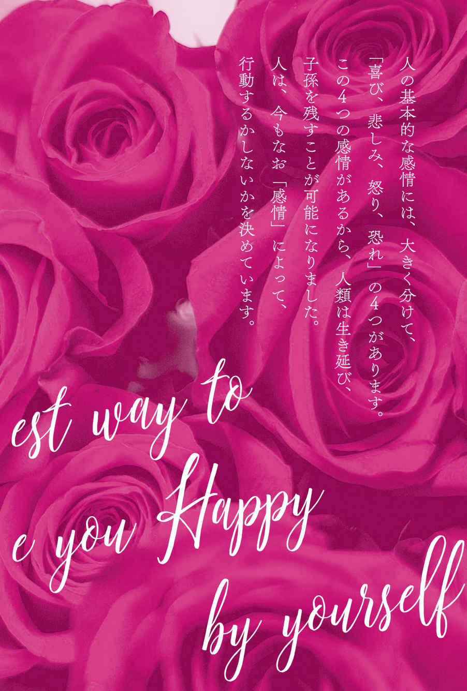
自分の感情がわからない人たち
気づかないうちに自分を犠牲にしていませんか？
「『自分の感情』がわからないんです。いろいろ考えはするのですが、『自分の感情』というものがわからないんです」
私のカウンセリングにいらっしゃるクライアントさんたちに、「普段から自分の感情を出せていますか？」と聞くと、半数近くの方がこう訴えられるのです。
いったい、どういうことでしょう？
小さなころからずっと 自分の感情よりも、理屈や常識、他人の基準に当てはめて考えることを優先している と、やがて自分の心に湧き出る感情から目を背けることがクセになってしまいます。
そうやって感情を無視することが当たり前になってしまうと、いつしかどうやって自分の気持ちを感じ取ったらいいのか、わからなくなってしまうのです。
たとえば、苦手な人に食事に誘われて、本当は行きたくないのに、愛想よく笑顔で「はい」と答えてしまうという具合です。
表の顔は、常識人でとても感じのいい人。でも心の奥底では、「あんな人と食事に行くなんて、嫌だなあ。どんな話をすればいいんだろう」という嫌悪の感情があるのです。
本来、怒りや嫌悪の感情が自分の中にあることをきちんと自覚できる人は、誘いを断るものです。
しかし、そんな怒りや嫌悪の感情を自分の中にないものとして無視して仮面をかぶり、笑顔を振りまき続けるから、自分の本当の感情がわからなくなってしまうのです。自分が怒っているのかいないのか、それすら、わからなくなってしまうのです。
乾いた心の砂漠に、
「感情」の泉が湧き出るオアシスを
なぜ、湧き出る自分の感情に蓋をしてしまうようなことをするのでしょうか。
その原因の１つとして、「誰からも嫌われたくない」「嫌われるのが恐い」「いい人だと思われたい」という気持ちが強いことがあげられます。
誰からも嫌われたくない、周りから変な目で見られたくないという思いが極端に強いから、自分の感情を押し殺して、常に他者の機嫌を損ねないよう、「いい顔」をする必要が生じてくるのです。
自分の感情を大切にすることは、自分を大切にすることにほかなりません。
怒りや悲しみ、恐怖といったネガティブな感情を抑圧していると、やがて喜びやうれしい、楽しいといったポジティブな感情までも感じにくくなっていきます。
喜びや幸せを感じやすくするためには、怒りや恐れといったネガティブな感情を抑えないことが必要です。
〝幸せの感度が低い人〟は、心が長くこの状態になっているせいで、喜びの感じ方を忘れてしまっているわけです。
こうなると、何をしてもつまらなく感じ、夢中になれることも見つかりません。そう、自分が何をしたいのかまで、わからなくなってしまうのです。
ですから、 本当に幸せになりたいのなら、お金を稼いだり、恋人をつくったりするよりも先に、自分は何が楽しくて、何を嫌だと感じるのか、〝感情を感じる力〟を取り戻す必要がある のです。
それが戻れば、〝幸福を感じられる心〟も次第に取り戻されていきます。
達人〝生まれたばかりのベビー〟に学ぶ
湧き出る自分の感情に蓋をしてしまう原因のもう１つは、「怒ることは恥ずかしいことだ」「感情的になるなんて幼稚で、大人げがない」と、ネガティブな感情を否定的にとらえていることがあげられます。
でも、生まれたばかりのベビーを見れば、気づくはずです。
赤ちゃんは、気持ちがいいのか悪いのか、感じたことを包み隠さず、素直に表現します。
お腹がいっぱいで心地がいいと、にこにこと笑ってすやすや眠るでしょう。お腹がすき、オムツがぬれて気持ち悪いと、オギャーと泣いて訴えてきます。
単純なことに見えますが、実はこれは、赤ちゃんが「生き延びるための重要な仕組み」なのです。
赤ちゃんは、たとえお腹がすいていても、自分ではミルクを用意できません。誰かに飲ませてもらわないと、命にかかわります。
ですから、赤ちゃんは電車の中だろうが、お母さんがなだめようが、全力で泣いて欲求をアピールするのです。「自分は、お腹なんてすいていません」と嘘の笑顔を振りまいたり、「そもそも私は、お腹をすかすことがありません」と、空腹の不快感をなかったことにしたりはしません。
しかし、 笑顔の仮面をかぶっている人は、これと真逆のことをしてしまっている のです。
不快であっても、そもそも不快を感じていないかのように取りつくろう。
怒りの感情など、自分にはないかのように思いこむ。抑えこむ。
それは、「自分を粗末に扱っている」ことにほかならないのです。
こんな〝おかしな望み〟に
決別を！
「感情をコントロールしたい」「イライラしないようになりたい」「怒らない人になりたい」という相談が、私のもとにはよく寄せられます。
でも、もうお気づきですね。その望みは〝おかしい〟ということに。
私たちは日々、いろいろな感情を抱いています。
それが自然な姿です。
ですからこういう方には、私は、「自然に湧いてきた感情を抑えこもうと、コントロールしないようにしてください」と言います。
これは、その感情を幼児のようにありのまま他人にぶつけなさいということではありません。
人に迷惑にならないように発散する方法は、また別のところでお伝えします。
重要なのは、まず、「快・不快」を感じる力を取り戻すこと。
これが、心地よく、自分らしく生きる力につながります。
イライラやムカムカといった不快な感情が湧いてきたら、「今、私は怒っている」「今、私はイラッときた」と感じてください。
４つの感情は、どれも大切なエネルギー。
それぞれに、あなどれない価値がある
人間の基本的な感情には、 「喜び」「悲しみ」「怒り」「恐れ」の４つ があります。
このほかにも、嫌悪、驚き、寂しさ、侮蔑、羞恥心や嫉妬心、安心感、憧れなどいろいろな感情がありますが、私のカウンセリングでは、大きくこの４つに集約されるとお教えしています。
なぜなら、この４つの感情が自然に出せるようになれば、あらゆるストレスが消え、将来の不安や人間関係の悩みなど、９割がたの問題が解決に向かっていくからです。
「喜び」だけが好ましい感情で、「悲しみ」「怒り」「恐れ」が悪い感情かというと、そんなことはありません。
４つとも どれも私たち人類が健全に、そして幸せに生きていくために 必要な感情だから、備わっているのです。
「喜び」 の感情は、人生を楽しく生きていくために必要です。
美味しいものを食べる喜び。自分に似合う素敵な服を着る喜び、できなかったことができるようになる喜びなどは、人生を彩り豊かにしてくれます。
新しい世界を知る喜び、いろいろなことにチャレンジして成長する喜びを幾千も積み重ねてきた結果、人類は進歩してきました。 喜びは積極的に生きることを可能にしてくれる感情なので、これが必要なのはわかるでしょう。
では、「悲しみ」「恐れ」「怒り」といったネガティブな感情は、なぜ必要なのでしょう？ どれもネガティブな感情だから、やっぱりないほうが楽しく幸せに生きていけるだろうと思いますか？
「悲しみ」の中にも
ギフトがある
「悲しみ」は、何かをなくしたとき、希望がかなわなかったとき、失敗したとき、大切な人を失ったときなどに覚える感情です。
悲しいときの肉体の反応には、涙を流すというものがあります。
これは、ダメージを受けることで心身に生じたストレスホルモンを涙によって体外に排出し、心身の傷を癒やしているのです。ですから、悲しいときや痛いときは、涙をこらえずに、思いっきり泣くほうがベターです。
では、心理面では、悲しみを覚えたときに、どんな変化があるでしょう？
失敗の辛さから、人は同じ過ちを犯さないように学習します。
失恋で悲しみを覚えたなら、相手を選ぶ目も養われますし、自分に非があればそれを改めるきっかけにもなります。
大切な人を亡くしたときは、胸が張りさけるような悲しみと、心にポッカリと大きな穴が空いたような喪失感を覚えます。
それが癒えるには、それなりの時間が必要です。ですが、癒えたあとには、その人の分までしっかり生きようと、強く前向きになることも可能です。
悲しみを味わうことで、命があることの有り難さや、限りある時間の大切さを学ぶことができます。
生きる限り、「悲しみ」のすべてを避けて通ることはできません。
それでも、いつか必ず雨はやみます。
「悲しみ」は、過去の辛い体験を乗り越えて新しい一歩を踏み出す力を与えてくれ、 自分に強さと慈愛というギフトをくれる 、価値のある感情だと受け入れましょう。
涙が乾いたあとのあなたの瞳は、さらに輝きを増していることでしょう。
「恐れ」には大きな
意味がある
「恐れ」とは、 命を守るためにある感情 です。
未来に起きるかもしれない危険を避けるための感情です。たとえば高い崖から落ちたら、怪我をするか死んでしまいます。でも、高い崖に登ろうとしたときに「恐い」という感情が湧いてくれば、崖に登ることをやめて、命を脅かす危険を避けることができるでしょう。
恐れに含まれる感情には「不安」があります。不安は、今はまだ起きていないけれど、将来起きるかもしれないことに対して悩み、不快になることです。
「恐れ」は対象がはっきりしていますが、「不安」は対象が漠然としてとらえどころがありません。そのため、心配ごとの９割は実際には起こらないといわれます。
しかし、不安があることで、災害や事故、失敗を未然に防ぎ、回避する対策を講じることができます。小心者や心配性のリーダーが意外にも成功するのは、こうした予測に基づき、ぬかりないリスク対策をするからでしょう。
「恐れ」があるから、将来起こり得る災難を回避し、無駄なエネルギーの消耗を防ぐことができる。 「恐れ」もまた、よりよい人生のために必要な感情なのです。
「怒り」が悪いものだと
なぜ決めつけるの？
「怒り」は、他人を傷つけ物事を破壊する、よくない感情だと思われがちです。
でも本当にそうでしょうか？
たとえば、暴漢や強盗に襲われそうになったとき。瞬時に「怒り」を出せる人なら、すぐさまこれに立ち向かうことができます。そして、自分の身や自分が愛する人を守る行動が取れます。
もし瞬時に怒りが出せなかったとしたら？ なんの抵抗もできず、ただ立ちすくみ、敵にされるがままになってしまいます。
「怒り」がうまく出せない人は、自分や愛する人を守るパワーに乏しいので弱々しく見えます。勇気も意気地もないように見えますので、他者からは舐 められてしまいがちです。
そう、 「怒り」とは本来、自分に降りかかる危害をはねのけ、自分や愛する人を守るためにある感情 です。己の利益を侵害する相手に立ち向かう勇気をくれる感情であり、「今ここ」で行動し、状況を打開していくパワーの源となります。
「怒り」は、社会生活において、自己主張や問題解決能力としてあらわれます。
「怒り」を抑えこんでいる人は、自分を守るための自己主張がうまくできません。
「怒り」を抑えこんでいた人が自然に「怒り」を感じ、うまく出せるようになっていくと、 自分の意見を主張できるようになる という変化があらわれます。そして、その延長線上で、 人前でどうどうと話すことができる ようになっていきます。
ちなみに誰かを守るためではなく 、意味もなく誰かを傷つけたり、自分より弱い者を理不尽に攻撃したりするのは、本当の「怒り」の感情ではありません。その下にある「悲しみ」や「恐れ」といった本物の感情を隠すためのニセモノの感情です。
不機嫌こそ最高のギフト
さあ、ここまでくれば人間に備わっている感情は、どれも必要なものばかりであることをご理解いただけたことでしょう。
人間は、「悲しみ」「恐れ」「怒り」といった不快な感情を抱かないかぎり、重い腰を上げてまで現状を変えようとしないものです。
不快な思いをするからこそ、私たちは自分を守り、大切にし、成長・進化し、さらに豊かで喜びに満ちた生活を手にすることができるのです。
思わず不機嫌になってしまうようなネガティブな感情は、 「人生を大きく変えるための偉大なる贈り物 」 ととらえることができるわけです。
怒りや恐れを感じてはいけないなどといった間違った思いこみを抱いていると、幸せにはなれません。よりたくさんの幸せを感じられるようになりたければ、自分の純粋な感覚を取り戻すことが必要なのです。
「怒り」「悲しみ」「恐れ」の感情が、自分の中に生じていることを認め、感じ、表に出すことで、本来の自然な自分に戻っていきます。
感情は、私たちの人生に色とりどりの豊かさをもたらしてくれます。そして、強さと、しなやかさ、成長も。ですから、湧いてきた感情を抑えこまずに、ありのままに味わうことが大切なのです。
今自分は、気持ちがいいのか、悪いのかに気づく練習から始めてみましょう。
ちなみに、感情に振り回されることと、感情を受け入れることは別物です。
ありのままに好き嫌いを感じて、しかし、他人の迷惑にならないように表に出していくことが、感情を受け入れるということです。
本当の感情を受け入れていくと、自分のしたいこと、したくないことが、ハッキリと見えてきます。自分の心を満たすにはどうしたらいいのか、明確にわかるようになります。
心に大きな翼を授けられ、より自由に楽しく、彩り豊かな人生へと羽ばたいていくことになります。
たった１秒の
自分の素直な気持ちに気づくレッスン
ありのままの感情を認識できているか、確認も含めて次のワークをしてみましょう。今の自分の感情に気づいてみましょう。
今、私は気持ちいいのか、気持ち悪いのかを感じます。
ハードルの低い、やりやすいものから試してみてください。特に回数に決まりはありません。自分の感情があまりよくわからないという人は、このワークを日ごろふと気づいたときにしていくことで、本当の自分を取り戻すことができます。
Ｗｏｒｋ１ 自分の感情に気づく１秒ワーク①
自分に、次のようなことを問いかけてみましょう。
今自分は、寒くて不快ではないか？
暖かくて快適か？
イスに座っていたら、座り心地はいいかどうか。
何か食べたり飲んだりしていたら、美味しいか、美味しくないか。
今会っている人と一緒にいると、居心地がいいのか、悪いのか。
Ｗｏｒｋ２ 自分の感情に気づく１秒ワーク②
何かを選ぶときに、自分が心地いいかどうかで選んでみましょう。
今、何が食べたくて、何が食べたくないのか。
映画はどんなものを観たいのか。
本は何を読みたいのか。
曲は何を聞きたいのか。
本書のワークは一日に、いくつやっていただいても構いません。ただ、順番にやっていくほうが効果は高いでしょう。どれも1 回か、気づいたときに数回やるだけで、１週間もしないうちになんらかの変化が期待できます。ワーク３、４、12 の３つだけは定着させるために２週間続けていただくことが目安となります。
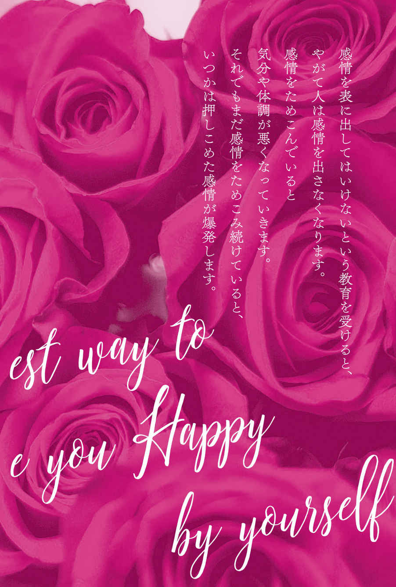
他人に振り回されない潔さと、
人生の主役にふさわしいオーラをまとう
幸せになるために、もっとも重要な感情。それが「怒り」
「喜び」「悲しみ」「恐れ」「怒り」、この４つの感情はどれも大事なのですが、特に重要なのは「怒り」です。
なぜなら、 怒りは元気やパワー、生命力の源 だからです。
怒りを抑えていると、くよくよと小さなことを気にしやすくなり、行動を起こす意欲がなくなります。
怒りのパワーは強いので、うまく解放して適切に出せるようになると、身を守るための力だけでなく、活力に満ちあふれ、どんどん元気になっていきます。
行動力や、勇ましさ、勇気が備わり、悩みや人生の課題を解決する力が目覚めます。 そして、自分の主張を通すための自己表現ができるようになっていきます。
「私は、こうしてほしい」
「私は、これをされると嫌だ。困るからやめてほしい」
こうした 自己主張の根底には、自分や自分の仲間を守る「怒り」の感情が潜んでいる のです。
〝道なきところに道をつくり、
幸福スパイラルを巻き起こすパワー〟の封印を解く
〝怒りを表に出すことはいけないことだ〟と思いこんでいると、怒りを出すことに罪悪感を覚え、自分の意見や異論を唱えること、当然の権利を主張することを控えてしまうようになります。
ところが、自分の意見を主張することは、目の前の問題を解決するために必要な行為であるため、抑えこんでしまうほうがもっと悪い結果を招くことになります。
抑えて心の奥底にしまいこんだ怒りは、何もしなければ解消されることはありません。行き場を失った怒りのエネルギーは、やがてストレスとなり、心身に悪影響を与え始めます。
心理的には、四六時中イライラムカムカした嫌な気分に苦しみます。
肉体的には、筋肉が硬くこわばり、顔には深い皺が刻まれ、肩こりや腰痛、消化不良などを引き起こします。
怒りを抑えこんだことによる悪影響は、じわじわと周囲にも及びます。
相手の迷惑な行動や理不尽な行為に腹が立っているのに、それを押し殺して黙っていれば、相手も自分の落ち度に気づくことができません。結局、相手は気づかないうちに迷惑な行為を繰り返すことになります。
もしも、相手が悪意を持っているのに何も主張しないで黙っていれば、さらに相手が調子に乗って、自分の不快感を助長させてしまうことになります。怒りを抑えこんでその場をやり過ごし続ければ、やがて、迷惑行為や理不尽なことをされるのが当たり前の人間関係や環境をつくってしまいます。言うべきことを言わなかった人の自業自得となるのです。
怒りは、自分を大切にするために必要な感情だということを思い出して、無視しないこと。ありのままに受けとめましょう。
そして他人に迷惑をかけたり、自分が不利益を被ったりしないよう、Ｃｈａｐｔｅｒ３で紹介する 怒りを解放するワーク をしていくことで、心と体の健康が保たれます。
やがて本当に好きなことを選び取り、勝ち取っていく力が与えられます。
もっと勉強してみよう、もっとキレイになろう、もっと豊かになろうという意欲も湧いてくるでしょう。積極的になって表情も明るくなりますから、希望がかなうことも自然と増えていくでしょう。
怒りをしっかり感じられるようになれば、ほかの３つの感情「喜び」「悲しみ」「恐れ」も次第に強く感じられるようになっていきます。
さまざまな
性格のつくられ方
「喜び」「悲しみ」「恐れ」「怒り」の４つは、生後６カ月くらいからあらわれる感情です。
どれが一番強くあらわれるかは、親にどう育てられたか、あるいは、生まれた順番や兄弟姉妹の有無などによって、人それぞれに変わってきます。
そのあらわれ方が、怒りっぽい性格や泣き虫といった性格を形成します。
大まかな傾向としては、明るくにぎやかで笑顔の多い家庭で育つと、どの感情も豊かに表現するようになります。
「喜び」はもちろん、「怒り」も「悲しみ」も素直に表現できるようになります。
親や周囲の大人たちが、悲しいときに泣いたり沈みこんだり、うれしいときには笑顔で鼻歌を歌ったり飛び跳ねたりして素直に喜びを表現していれば、その中で育つ子どもも、同じように泣いたり沈みこんだり、笑顔で鼻歌を歌ったり飛び跳ねたりして素直に感情をあらわすことができるようになります。
親が怒りっぽいと、子も怒りっぽくなり、親が泣いて悲しみを表現することが多いと、子も泣き虫になる傾向があります。
うれしいことや辛いことがあっても、その感情をあまり出さずに我慢するタイプの家庭で育った人は、「感情は、表に出してはいけないものだ」と思いこみ、あまり感情を出さなくなる傾向があります。
感情を抑え、ためこむことは、「その感情は感じてはいけないものだ、出してはいけないものだ」と思いこんでいる証 です。
ちなみに、第一子は、感情を抑えこむようになる傾向があります。
弟や妹が生まれると、今までのように感情の赴くままに甘えたりわめいたりすれば、親に「お姉ちゃん（お兄ちゃん）なんだから、我慢してね」となだめられ、大人しく我慢することが増えていくからです。あなたが長女や長男であれば、そうした傾向があることを知っておくと、感情の解放をするときの助けとなります。
男は「悲しみ」を抑えこみ、女は「怒り」を抑えこむ。
そして笑えない結末に！
男性は、「悲しみ」と「恐れ」を我慢して抑えこみやすく、代わりに「怒り」を出しやすい傾向があります。
男性は幼いころに転んで泣くと、親から「男の子でしょ、泣かないの」「それくらい我慢しなさい」とよく言われたことでしょう。そして、恐がっているときには、「恐くない！」「もっと強くなりなさい」と言われてきました。
そうした躾 のせいで、男性は、とりわけ「悲しみ」と「恐れ」を素直に表に出すことが苦手になってしまっています。
ですから大人になってからも本当は恐くて悲しいのに、強がって平静を装ってみたり、出し慣れている「怒り」の感情で対処したりしてしまうのです。
たとえば、妻にかまってもらえないと、すぐにキレて怒鳴る夫がそうです。本当は「悲しい」のに、それを素直に出せず、日ごろ出し慣れている「怒り」という代理の、ニセモノの感情を出しているのです。
実は、それこそが問題なのです。
先に、 感情は「幸せになるためにある」 とお教えしましたね。しかし、代理の感情とは、ニセモノの感情であり、本当の感情ではありませんから、この夫は、妻にかまってもらえない悲しさを伝えることも、解決することもできません。
本当の感情を率直に表現することで問題は解決していきます。 この場合は夫が、
「かまってもらえないのは悲しい。本当はもっと二人の時間を増やしたい」と、素直に悲しみを表現していれば、久しぶりのデートが実現して幸せな時間が得られたかもしれません。
ところが、怒りというニセモノの感情をぶつけられた妻は、夫を恐れたり嫌ったりして、さらに距離を置くようになってしまいます。
代理の ニセモノの感情を出したばかりに、問題の解決を難しくさせてしまったと いうわけです。
幸せな人は皆、素直に伝えている
──生き方上手のヒント
一方、女性は「怒り」を抑えこみやすく、「悲しみ」と「恐れ」を出しやすい傾向があります。
私のもとにカウンセリングに来られる女性の約７割が、「今までほとんど怒ったことがありません」とおっしゃいます。
理由はさまざまですが、中には怒っている姿を見られることは恥ずかしいことだと思っている人もいました。
女性は、おしとやかで優しく、か弱くあるべきという古い常識にしばられ、怒りを抑えてきた結果、自分の意見をハッキリ主張することができないまま大人になった女性は多くいます。
そのせいで女性は、「怒り」を怒りとしてではなく、普段から表現し慣れている「悲しみ」あるいは微笑みに置き換えてしまいがちです。涙ぐんだり、グチの形で嘆いたり、「恐れ」に置き換えて押し黙ったり、あるいは作り笑顔を浮かべてしまったりするのです。これでは怒っていることが周囲の人に伝わるはずがありません。下手をしたら、満足しているなどと勘違いされてしまいかねません。
比較的、怒りを表に出せる女性でも、よほどためこんでからでないと吐き出さないものです。
女性が正しく怒りをあらわし、言うべきことをしっかり言うようになれば、男性はあっさり理解し、納得することがほとんどです。
本当の感情である怒りを抑えこむから、解決から遠ざかってしまうのです。
この『自分に最上級のＨＡＰＰＹを贈る方法』【無料お試し版】の完全版は、２０１８年１０月１７日以降に全国の書店およびオンライン書店にてお買い求めいただけます。
常冨泰弘（つねとみ・やすひろ）
心理カウンセラー。福岡県生まれ。 大学卒業後、北九州市の私立高校に赴任。２年後、福岡県の公立高校の教諭となり、20 年間教壇に立つ。２００８年より心理学、コーチングなどを学び始め、２０１２年より心理カウンセラーとして活動を始める。２０１４年、ミス・ユニバース・ジャパン・ビューティーキャンプで各県代表のファイナリストにセルフイメージアップの講義を担当。２０１５年よりミス・ユニバース・ジャパン・長崎大会でのビューティーキャンプも担当。実践的なワークを取り入れた講義は、ファイナリストたちを緊張やストレスから解放し、本来の魅力を引き出し、世界に通用するどうどうたるアピールを可能にすると好評を博している。趣味は、毎年夏に小笠原諸島で野生イルカと泳ぐこと。
http://beherenow.jp/
本作品の全部あるいは一部を無断で複製・転載・配信・送信したり、
ホームページ上に転載することを禁止します。
本作品の内容を無断で改変、改ざん等を行うことも禁止します。
また、有償・無償にかかわらず本作品を第三者に譲渡することはできません。
『自分に自信を付ける最高の方法』『自分に最上級のHAPPYを贈る方法』無料お試し版
電子書籍版
発行日 ２０１８年１０月９日
著 者 常冨泰弘（つねとみ・やすひろ）
発行者 押鐘太陽
発行所 株式会社三笠書房
〒１０２−００７２
東京都千代田区飯田橋３−３−１
０３−５２２６−５７３１
http://www.mikasashobo.co.jp
制 作 誠宏印刷株式会社
(C) Yasuhiro Tsunetomi
●三笠書房『自分に自信をつける最高の方法』（２０１７年４月５日 初版第１刷発行）●三笠書房『自分に最上級のＨＡＰＰＹを贈る方法』（２０１８年１０月２０日 初版第１刷発行）に基づいて電子書籍版は制作されました。